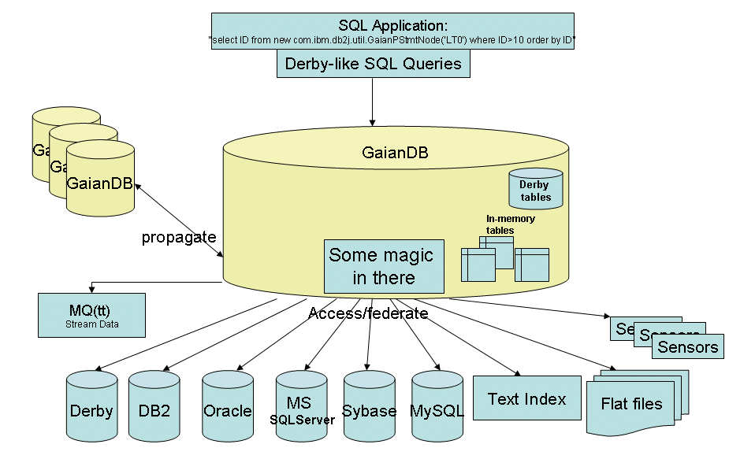
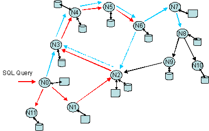
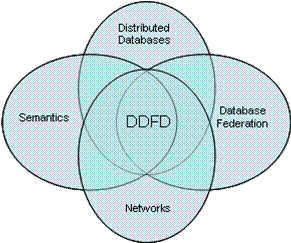
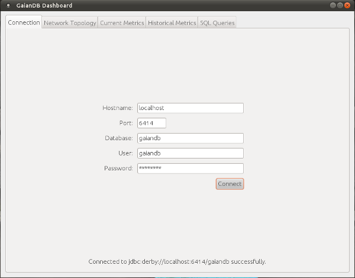
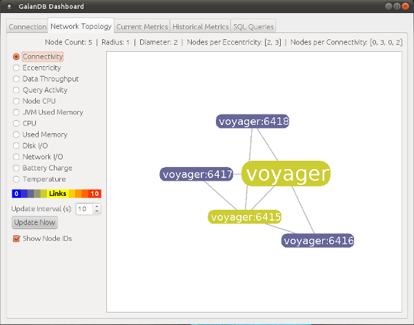
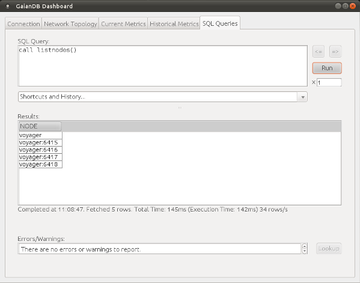
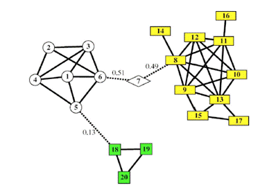
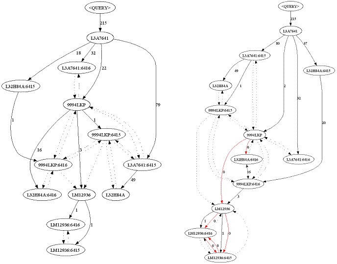
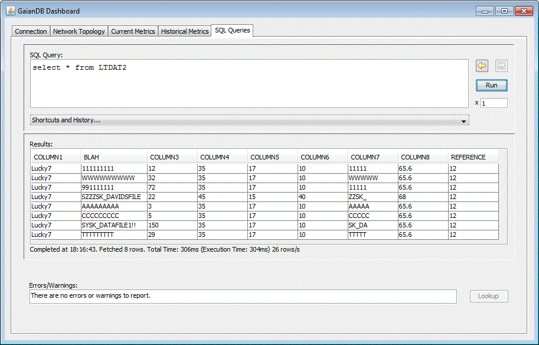
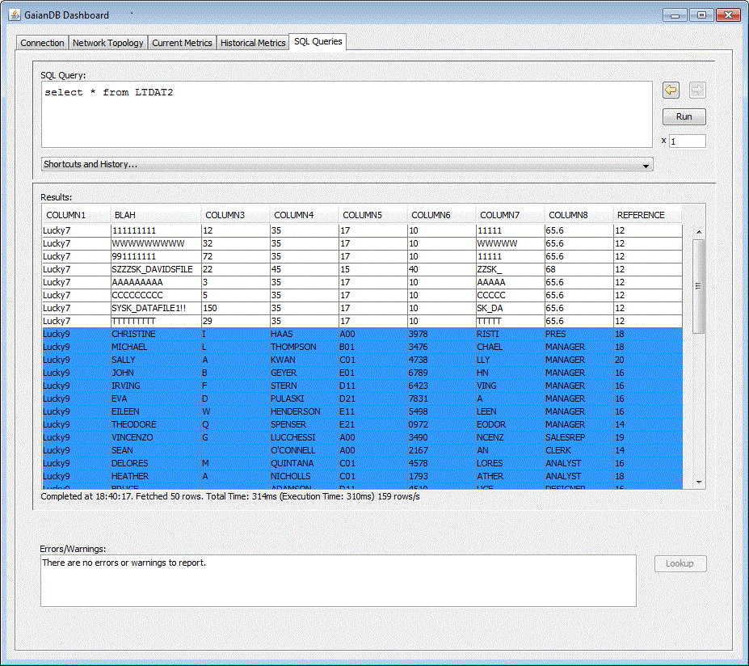

The Gaian Database - or GaianDB for short - is a lightweight (<4MB) dynamically distributed federated database (DDFD) engine based on Apache Derby 10.x. It provides a single centralized view over multiple, heterogeneous back-end data sources (e.g. RDBMS dbs, files, text indexes, spreadsheets, etc.) using an extensible logical table abstraction layer. However, its principal feature is its ability to automatically discover and federate other GaianDB instances (federating nodes) such that a whole network of these can be automatically formed.
|  |  |
| Fig. 1 - GaianDB high level architecture | Fig. 2 - GaianDB connectivity model |
GaianDB advocates a flexible 'store locally, query anywhere' (SLQA) paradigm, which means the data remains where it is, but you have a centralized view over which you can query. Each data source should have its data managed autonomously and applications can choose which sections of it to make available to the GaianDB network. For this reason distributed insert/update/delete operations are not currently supported.
Queries can be injected at any node and are routed effectively around the network using a 'biologically inspired' connectivity model that strives to minimise query time and maximise efficiency (by minimising network diameter and maximising connections to the fittest nodes).
Architecturally, GaianDB sits underneath Derby, and is invoked by Derby to process any GaianDB-specific SQL. To query GaianDB you typically identify the 'GaianTable' class (which references a logical table, similar to a view definition), or the 'GaianQuery' class (which references an embedded subquery), either of which will retrieve federated data from every GaianDB node in a connected network. Other GaianDB SQL usage may be invocations of one of the stored procedures or functions that make up GaianDB's system management API. These can be used to define Logical Tables and their federated Data Sources, relational database connections, user-defined Gaian Connections (for nodes that couldn't be discovered), or any of GaianDB's general system properties individually.
The distributed, federated and store-local nature of GaianDB makes it extremely scalable and suitable for a wide variety of deployments and scenarios. Also, GaianDB is 100% Java and so it can run in a multitude of places; anywhere from small devices, like mobile phones, to large enterprise systems; easily integrating between all of these.
GaianDB has already been used in the context of complex text analytics applications, performing distributed semantic join queries, and drawn the attention of significant customers in the military space.
As a DDFD technology, its positioning is shown below:
|  |
| Fig. 3 - GaianDB positioning |
GaianDB also offers a wide range of other features such as: Dynamic re-configuration; an 'Explain' network-route query option; In-Memory tables and indexing; Message Broker integration; contextual meta-data.
For more information on GaianDB, take a look at this recently (2008) published paper: A Dynamic Distributed Federated Database
If you are already using GaianDB, and want to upgrade please refer to the upgrade instructions.
GaianDB only supports the official JDBC drivers provided by the Relational Database providers listed below:
| Name | Jar file(s) | JDBC driver class | URL connection template |
|---|---|---|---|
| DB2 | db2jcc.jar, db2jcc_licence_cu.jar | com.ibm.db2.jcc.DB2Driver | jdbc:db2://<server>:<port50000>/<database> |
| SQLServer | sqljdbc4.jar | com.microsoft.sqlserver.jdbc.SQLServerDriver | jdbc:sqlserver://<server>:<port1433>;DatabaseName=<database> |
| MySQL | mysql-connector-java-5.1.7-bin.jar | com.mysql.jdbc.Driver | jdbc:mysql://<server>:<port3306>/<database> |
| Oracle | ojdbc14.jar or ojdbc6.jar | oracle.jdbc.OracleDriver | jdbc:oracle:thin:@<server>:<port3306>/<database> |
Knowledge of SQL. All SQL conventions that apply to Apache Derby apply to the IBM Gaian Database. See Apache Derby's Reference Manual for more information.
GaianDB has primarily been tested on RHEL, Ubuntu, Windows and MAC OS X. The documentation uses the term 'Unix' to refer to Linux and MAC OS X. GaianDB should work on other Unix systems (AIX, HP-UX, Solaris, etc ..) and was demonstrated running on many virtualization engines (VMWare,KVM,Xen) and Cloud software (IBM SmartCloud Provisioning (SCP), Amazon EC2, OpenStack), but no testing has been done.
Windows and Unix scripts are provided in the installation for starting a GaianDB server ('launchGaianServer.bat' & 'launchGaianServer.sh') and running the Command Line Processor ('queryDerby.bat' & 'queryDerby.sh').
Note: All paths, whether on Windows or Unix, should use forward slashes (/) and not backslashes (\).
When launching a GaianDB node, the system must be able to resolve its own hostname to an IP address. You can check this by:
If it cannot:
Install Gaian
To 'install' GaianDB, simply unzip the zip install file to a directory of your choice. (For instance 'C:\GaianDB' on Windows or '/home/myuser/GaianDB' on Unix)
Launch a GaianDB Node
You are now ready to launch a GaianDB node. To do so, run 'launchGaianServer.bat' on Windows or './launchGaianServer.sh' on Unix.
By default, the GaianDB node will start a Derby server listening on port 6414 and use the properties file 'gaiandb_config.properties' in the local directory.
Examine the default configuration
To quickly test that GaianDB is up and running:
You can also run other queries against GaianDB using the Command Line Processor or Dashboard Graphical User Interface client utilities. For example, you can use to the Command Line Processor to run 'select' commands or run some of the stored procedures the GaianDB provides to verify the installation is correct, as follows:
sql>
select * from LT0
call listspfs()- lists all defined stored procedures and functions.
call listlts()- lists all defined Logical Tables.
call listds()- lists all Data Sources federated by all logical tables.
call listrdbc()- lists all active (i.e. that have an attached data source) relational database connections
For each example, first start a GaianDB node (see First Steps).
Then, when the server has started, run 'queryDerby.bat' on Windows or './queryDerby.sh' on Unix to start a Command Line Processor connected to the GaianDB server.
Note: You can also use the Dashboard Graphical User Interface client utility to perform these examples.
In this quick example we will show you how to federate an existing RDBMS table using GaianDB. For this we will use the DB2 sample table 'employee'; please refer to the DB2 documentation for how to install the sample tables.
sql> sql> call listrdbc() call listrdbc() ============================================================================================================================================ GDB_NODE |CID |CDRIVER |CURL |CUSR | ============================================================================================================================================ L3R3844 |LOCALDERBY |org.apache.derby.jdbc.EmbeddedDriver |jdbc:derby:gaiandb;create=true |gaiandb | L3R3844 |mysql5 |com.mysql.jdbc.Driver |jdbc:mysql://localhost:3306/test |root | ============================================================================================================================================ Fetched 2 rows. Total Time: 47ms (Execution Time: 47ms) sql>
setrdbc(...) with a connection id of 'db2conn' and the driver & url as shown below (unless your DB2 instance is running on a different machine or port). Enter your own user name and password for DB2 in place of the last 2 arguments.
sql>
sql> call setrdbc('db2conn', 'com.ibm.db2.jcc.DB2Driver', 'jdbc:db2://localhost:50000/sample', 'DavidVyvyan', '???????')
call setrdbc('db2conn', 'com.ibm.db2.jcc.DB2Driver', 'jdbc:db2://localhost:50000/sample', 'DavidVyvyan', '???????')
sql>
setltforrdbtable(<New Logical Table Name>, <Database Connection>, <Selection Predicate>). For example:
sql> call setltforrdbtable('db2employee', 'db2conn', 'employee')
call setltforrdbtable('db2employee', 'db2conn', 'employee')
sql>
Where:
NOTE: The DB2 driver classes must be on the CLASSPATH in launchGaianServer.bat.
sql> select * from db2employee select * from db2employee ======================================================================================================================================================== EMPNO |FIRSTNME |MIDINIT|LASTNAME |WORKDEPT|PHONENO|HIREDATE |JOB |EDLEVEL|SEX|BIRTHDATE |SALARY |BONUS |COMM |NODEINDEX | ======================================================================================================================================================== 000010|CHRISTINE |I |HAAS |A00 |3978 |1995-01-01|PRES | 18|F |1963-08-24| 152750.00| 1000.00| 4220.00| 1| 000020|MICHAEL |L |THOMPSON |B01 |3476 |2003-10-10|MANAGER | 18|M |1978-02-02| 94250.00| 800.00| 3300.00| 1| 000030|SALLY |A |KWAN |C01 |4738 |2005-04-05|MANAGER | 20|F |1971-05-11| 98250.00| 800.00| 3060.00| 1| 000050|JOHN |B |GEYER |E01 |6789 |1979-08-17|MANAGER | 16|M |1955-09-15| 80175.00| 800.00| 3214.00| 1| 000060|IRVING |F |STERN |D11 |6423 |2003-09-14|MANAGER | 16|M |1975-07-07| 72250.00| 500.00| 2580.00| 1| 000070|EVA |D |PULASKI |D21 |7831 |2005-09-30|MANAGER | 16|F |2003-05-26| 96170.00| 700.00| 2893.00| 1| 000090|EILEEN |W |HENDERSON |E11 |5498 |2000-08-15|MANAGER | 16|F |1971-05-15| 89750.00| 600.00| 2380.00| 1| 000100|THEODORE |Q |SPENSER |E21 |0972 |2000-06-19|MANAGER | 14|M |1980-12-18| 86150.00| 500.00| 2092.00| 1| 000110|VINCENZO |G |LUCCHESSI |A00 |3490 |1988-05-16|SALESREP| 19|M |1959-11-05| 66500.00| 900.00| 3720.00| 1| 000120|SEAN | |O'CONNELL |A00 |2167 |1993-12-05|CLERK | 14|M |1972-10-18| 49250.00| 600.00| 2340.00| 1| 000130|DELORES |M |QUINTANA |C01 |4578 |2001-07-28|ANALYST | 16|F |1955-09-15| 73800.00| 500.00| 1904.00| 1| 000140|HEATHER |A |NICHOLLS |C01 |1793 |2006-12-15|ANALYST | 18|F |1976-01-19| 68420.00| 600.00| 2274.00| 1| 000150|BRUCE | |ADAMSON |D11 |4510 |2002-02-12|DESIGNER| 16|M |1977-05-17| 55280.00| 500.00| 2022.00| 1| 000160|ELIZABETH |R |PIANKA |D11 |3782 |2006-10-11|DESIGNER| 17|F |1980-04-12| 62250.00| 400.00| 1780.00| 1| 000170|MASATOSHI |J |YOSHIMURA |D11 |2890 |1999-09-15|DESIGNER| 16|M |1981-01-05| 44680.00| 500.00| 1974.00| 1| 000180|MARILYN |S |SCOUTTEN |D11 |1682 |2003-07-07|DESIGNER| 17|F |1979-02-21| 51340.00| 500.00| 1707.00| 1| 000190|JAMES |H |WALKER |D11 |2986 |2004-07-26|DESIGNER| 16|M |1982-06-25| 50450.00| 400.00| 1636.00| 1| 000200|DAVID | |BROWN |D11 |4501 |2002-03-03|DESIGNER| 16|M |1971-05-29| 57740.00| 600.00| 2217.00| 1| 000210|WILLIAM |T |JONES |D11 |0942 |1998-04-11|DESIGNER| 17|M |2003-02-23| 68270.00| 400.00| 1462.00| 1| 000220|JENNIFER |K |LUTZ |D11 |0672 |1998-08-29|DESIGNER| 18|F |1978-03-19| 49840.00| 600.00| 2387.00| 1| 000230|JAMES |J |JEFFERSON |D21 |2094 |1996-11-21|CLERK | 14|M |1980-05-30| 42180.00| 400.00| 1774.00| 1| 000240|SALVATORE |M |MARINO |D21 |3780 |2004-12-05|CLERK | 17|M |2002-03-31| 48760.00| 600.00| 2301.00| 1| 000250|DANIEL |S |SMITH |D21 |0961 |1999-10-30|CLERK | 15|M |1969-11-12| 49180.00| 400.00| 1534.00| 1| 000260|SYBIL |P |JOHNSON |D21 |8953 |2005-09-11|CLERK | 16|F |1976-10-05| 47250.00| 300.00| 1380.00| 1| 000270|MARIA |L |PEREZ |D21 |9001 |2006-09-30|CLERK | 15|F |2003-05-26| 37380.00| 500.00| 2190.00| 1| 000280|ETHEL |R |SCHNEIDER |E11 |8997 |1997-03-24|OPERATOR| 17|F |1976-03-28| 36250.00| 500.00| 2100.00| 1| 000290|JOHN |R |PARKER |E11 |4502 |2006-05-30|OPERATOR| 12|M |1985-07-09| 35340.00| 300.00| 1227.00| 1| 000300|PHILIP |X |SMITH |E11 |2095 |2002-06-19|OPERATOR| 14|M |1976-10-27| 37750.00| 400.00| 1420.00| 1| 000310|MAUDE |F |SETRIGHT |E11 |3332 |1994-09-12|OPERATOR| 12|F |1961-04-21| 35900.00| 300.00| 1272.00| 1| 000320|RAMLAL |V |MEHTA |E21 |9990 |1995-07-07|FIELDREP| 16|M |1962-08-11| 39950.00| 400.00| 1596.00| 1| 000330|WING | |LEE |E21 |2103 |2006-02-23|FIELDREP| 14|M |1971-07-18| 45370.00| 500.00| 2030.00| 1| 000340|JASON |R |GOUNOT |E21 |5698 |1977-05-05|FIELDREP| 16|M |1956-05-17| 43840.00| 500.00| 1907.00| 1| 200010|DIAN |J |HEMMINGER |A00 |3978 |1995-01-01|SALESREP| 18|F |1973-08-14| 46500.00| 1000.00| 4220.00| 1| 200120|GREG | |ORLANDO |A00 |2167 |2002-05-05|CLERK | 14|M |1972-10-18| 39250.00| 600.00| 2340.00| 1| 200140|KIM |N |NATZ |C01 |1793 |2006-12-15|ANALYST | 18|F |1976-01-19| 68420.00| 600.00| 2274.00| 1| 200170|KIYOSHI | |YAMAMOTO |D11 |2890 |2005-09-15|DESIGNER| 16|M |1981-01-05| 64680.00| 500.00| 1974.00| 1| 200220|REBA |K |JOHN |D11 |0672 |2005-08-29|DESIGNER| 18|F |1978-03-19| 69840.00| 600.00| 2387.00| 1| 200240|ROBERT |M |MONTEVERDE |D21 |3780 |2004-12-05|CLERK | 17|M |1984-03-31| 37760.00| 600.00| 2301.00| 1| 200280|EILEEN |R |SCHWARTZ |E11 |8997 |1997-03-24|OPERATOR| 17|F |1966-03-28| 46250.00| 500.00| 2100.00| 1| 200310|MICHELLE |F |SPRINGER |E11 |3332 |1994-09-12|OPERATOR| 12|F |1961-04-21| 35900.00| 300.00| 1272.00| 1| 200330|HELENA | |WONG |E21 |2103 |2006-02-23|FIELDREP| 14|F |1971-07-18| 35370.00| 500.00| 2030.00| 1| 200340|ROY |R |ALONZO |E21 |5698 |1997-07-05|FIELDREP| 16|M |1956-05-17| 31840.00| 500.00| 1907.00| 1| ======================================================================================================================================================== Fetched 42 rows. Total Time: 219ms (Execution Time: 172ms) sql>
This contains all columns from the physical table 'employee' and also an example constant column 'NODEINDEX' to identify which GaianDB node the information is from. For more info on constant columns, refer to this section.
listrdbc() - this shows the active RDBMS connections of every connected GaianDB node (the only node in the example below is L3R3844).
sql> sql> call listrdbc() call listrdbc() ============================================================================================================================================ GDB_NODE |CID |CDRIVER |CURL |CUSR | ============================================================================================================================================ L3R3844 |LOCALDERBY |org.apache.derby.jdbc.EmbeddedDriver |jdbc:derby:gaiandb;create=true |gaiandb | L3R3844 |mysql5 |com.mysql.jdbc.Driver |jdbc:mysql://localhost:3306/test |root | L3R3844 |DB2CONN |com.ibm.db2.jcc.DB2Driver |jdbc:db2://localhost:50000/sample |DavidVyvyan | ============================================================================================================================================ Fetched 3 rows. Total Time: 47ms (Execution Time: 16ms) sql>
listds() - this shows all the active data sources of every connected GaianDB node.
sql> sql> call listds() call listds() ===================================================================================================================================================================================== GDB_NODE |DSID |DSTYPE|DSWRAPPER |DSHANDLE |DSOPTIONS | ===================================================================================================================================================================================== L3R3844 |DB2SALES_DS0 |R |tk:1 |jdbc:db2://localhost:50000/sample::sales |- | L3R3844 |LT1_DS0 |R |EmbedStatement:1 |jdbc:derby:gaiandb;create=true::TABLE1 |- | L3R3844 |LT0_DS0 |V |InMemoryRows:1 |./csvtestfiles/datafile.dat |INMEMORY | L3R3844 |DB2EMPLOYEE_DS0 |R |InMemoryRows:1 |jdbc:db2://localhost:50000/sample::employee where firstnme > 'T' |INMEMORY INDEX ON FIRSTNME| L3R3844 |DF2_DSDATAFILE2 |V |FileImport:1 |./csvtestfiles/datafile2.dat |- | L3R3844 |MYSQLLT_DSCARS |R |InMemoryRows:1 |jdbc:mysql://localhost:3306/test::cars |INMEMORY | L3R3844 |DERBY_TABLES_DSLOC |R |EmbedStatement:1 |jdbc:derby:gaiandb;create=true::sys.systables,sys.syscolumns where tableid=referenceid |- | ===================================================================================================================================================================================== Fetched 7 rows. Total Time: 62ms (Execution Time: 46ms) sql>
The data source id (DSID) is a composite name which has as prefix of the logical table name to which it is attached.
Other columns denote:
| Column Name | Description |
|---|---|
| DSTYPE | Data source type (e.g. R for RDBMS, V for Virtual Table) |
| DSWRAPPER | Wrapping class and the number of pool instances in memory. |
| DSHANDLE | Physical source handle descriptor (e.g data source filename or db url+table name) |
| DSOPTIONS | Data source options list. This currently only describes whether the data source is held in memory and, if so, any index that might be defined on one of its columns. |
setltforrdbtable(...) stored procedure so that only matching records from the 'employee' table are federated.
sql>
sql> call setltforrdbtable('db2employee', 'db2conn', 'employee where firstnme > ''T''')
call setltforrdbtable('db2employee', 'db2conn', 'employee where firstnme > ''T''')
sql>
sql> select * from db2employee
select * from db2employee
========================================================================================================================================================
EMPNO |FIRSTNME |MIDINIT|LASTNAME |WORKDEPT|PHONENO|HIREDATE |JOB |EDLEVEL|SEX|BIRTHDATE |SALARY |BONUS |COMM |NODEINDEX |
========================================================================================================================================================
000100|THEODORE |Q |SPENSER |E21 |0972 |2000-06-19|MANAGER | 14|M |1980-12-18| 86150.00| 500.00| 2092.00| 1|
000110|VINCENZO |G |LUCCHESSI |A00 |3490 |1988-05-16|SALESREP| 19|M |1959-11-05| 66500.00| 900.00| 3720.00| 1|
000210|WILLIAM |T |JONES |D11 |0942 |1998-04-11|DESIGNER| 17|M |2003-02-23| 68270.00| 400.00| 1462.00| 1|
000330|WING | |LEE |E21 |2103 |2006-02-23|FIELDREP| 14|M |1971-07-18| 45370.00| 500.00| 2030.00| 1|
========================================================================================================================================================
Fetched 4 rows. Total Time: 31ms (Execution Time: 15ms)
sql>
sql>
These selection predicates can be very complex. For example, you could use one to federate the result of a join between two tables.
In this quick example we will show you how to federate an existing CSV flat file using GaianDB. For this we will use the file found at '<GaianDB Install Directory>/csvtestfiles/datafile3.dat'.
Note that GaianDB's FileImport VTI can read many different file formats, not just CSV. The record and field separators and other 'control parameters' such as these may be altered using a 'control file'. Refer to Text file federation configuration options (e.g: how to specify different record and field separators) for details.
Note: All paths, whether on Windows or Unix, should use forward slashes (/) and not backslashes (\).
setltforfile(<logical table name>, <file location>).
sql>
sql> call setltforfile('zzz', './csvtestfiles/datafile3.dat')
call setltforfile('zzz', './csvtestfiles/datafile3.dat')
sql>
listds().
Refer to the
previous explanation on the columns returned by listrdbc() and listds() for details on the columns used here.sql> sql> call listds() call listds() ========================================================================================================================================================================================= GDB_NODE |DSID |DSTYPE|DSWRAPPER |DSHANDLE |DSOPTIONS | ========================================================================================================================================================================================= L3R3844 |DB2SALES_DS0 |R |tk:1 |jdbc:db2://localhost:50000/sample::sales |- | L3R3844 |LT1_DS0 |R |EmbedStatement:1 |jdbc:derby:gaiandb;create=true::TABLE1 |- | L3R3844 |LT0_DS0 |V |InMemoryRows:1 |./csvtestfiles/datafile.dat |INMEMORY | L3R3844 |DB2EMPLOYEE_DS0 |R |InMemoryRows:1 |jdbc:db2://localhost:50000/sample::employee where firstnme > 'T' |INMEMORY INDEX ON FIRSTNME| L3R3844 |ZZZ_DS0 |V |FileImport:1 |./csvtestfiles/datafile3.dat |- | L3R3844 |MYSQLLT_DSCARS |R |InMemoryRows:1 |jdbc:mysql://localhost:3306/test::cars |INMEMORY | L3R3844 |DERBY_TABLES_DSLOC |R |EmbedStatement:1 |jdbc:derby:gaiandb;create=true::sys.systables,sys.syscolumns where tableid=referenceid |- | ========================================================================================================================================================================================= Fetched 7 rows. Total Time: 31ms (Execution Time: 0ms) sql>
If it was successful, you should see an entry with a DSID of 'ZZZ_DS0' and a DSHANDLE of './csvtestfiles/datafile3.dat'.
sql> sql> select * from zzz select * from zzz ==================================================================================================================================================================================== COLUMN1 |COLUMN2 |COLUMN3 |COLUMN4 |COLUMN5 |COLUMN6 |COLUMN7 |COLUMN8 |NODEINDEX | ==================================================================================================================================================================================== 2 |YYYYYYYYYYY2222222222 |62 |35 |17 |10 |122 |65.6 | 1| 91 |BLAHBLAH |3 |2 |44 |35 |0 |2.1 | 1| 9 |SHG*&^22datafile3 |62 |35 |17 |10 |122 |65.6 | 1| 9 |FFFFFFFFFFFK2222222222|62 |35 |17 |10 |122 |65.6 | 1| ==================================================================================================================================================================================== Fetched 4 rows. Total Time: 16ms (Execution Time: 16ms) sql> sql>
This contains all columns from the CSV file and also an example constant column 'NODEINDEX' to identify which GaianDB node the information is from. For more info on constant columns, refer to this section.
In this quick example we will show you how to federate an existing Excel spreadsheet using GaianDB. For this we will use the spreadsheet found at '<GaianDB Install Directory>/exceltestfiles/address.xls'.
Note: All paths, whether on Windows or Unix, should use forward slashes (/) and not backslashes (\).
If you wish to perform this example, you will require the POI libraries (version 3.6 or above) for manipulating Microsoft Documents from the Apache POI website. If you are happy to accept the license terms, you can choose to download the binary distributions. The necessary jar files are:
Where XX is the version number.
These jars would need to be placed into the GaianDB lib directory and then added to the GaianDB classpath as follows:
rem Apache - POI jars for spreadsheet federation SET CLASSPATH=%CLASSPATH%;%GDBL%\geronimo-stax-api_XX.jar;%GDBL%\poi-ooxml-schemas-XX.jar;%GDBL%\dom4j-XX.jar;%GDBL%\poi-XX.jar;%GDBL%\poi-ooxml-XX.jar;%GDBL%\xmlbeans-XX.jar
# Apache - POI jars for spreadsheet federation
export CLASSPATH="$CLASSPATH:$GDBL/geronimo-stax-api_XX.jar:$GDBL/poi-ooxml-schemas-XX.jar:$GDBL/dom4j-XX.jar:$GDBL/poi-XX.jar:$GDBL/poi-ooxml-XX.jar:$GDBL/xmlbeans-XX.jar"
If you had already started the GaianDB by using the launchGaianServer script, you will need to stop the node and restart it for the new changes to be taken into account. To stop GaianDB, you can either close the command window on Windows, or use Ctrl-C on Unix or use the killGaianServer script. When starting multiple nodes, you will need to use the killGaianServers script to stop them all.
setltforexcel(...):
sql>
sql> call setltforexcel('lsheet1', 'exceltestfiles/address.xls,Sheet1')
call setltforexcel('lsheet1', 'exceltestfiles/address.xls,Sheet1')
sql>
You can also federate a part of the spreadsheet by defining a range :
sql>
sql> call setltforexcel('lsheet2', 'exceltestfiles/address.xls,Sheet1,A1,D7')
call setltforexcel('lsheet2', 'exceltestfiles/address.xls,Sheet1,A1,D7')
sql>
By default, the values of the first row are used as the column names for the federated table. However, if the first row does not contain the column names, you can add 'false' to the parameters to have the column names automatically generated; in the form COLUMN1, COLUMN2, COLUMN<n>:
sql>
sql> call setltforexcel('lsheet3', 'exceltestfiles/address.xls,Sheet1,A5,D7,false')
call setltforexcel('lsheet3', 'exceltestfiles/address.xls,Sheet1,A5,D7,false')
sql>
listds(). Refer to the previous explanation on the columns returned by listrdbc() and listds() for details on the columns used here.
sql> sql> call listds() call listds() =============================================================================================================================================================================== GDB_NODE |DSID |DSTYPE|DSWRAPPER |DSHANDLE |DSOPTIONS | =============================================================================================================================================================================== L3R3844 |DB2SALES_DS0 |R |tk:1 |jdbc:db2://localhost:50000/sample::sales |- | L3R3844 |LSHEET1_DS0 |V |- |address.xls,Sheet1 |- | L3R3844 |LSHEET2_DS0 |V |- |address.xls,Sheet1,A:1,D:7 |- | L3R3844 |LT1_DS0 |R |EmbedStatement:1 |jdbc:derby:gaiandb;create=true::TABLE1 |- | L3R3844 |LT0_DS0 |V |InMemoryRows:1 |./csvtestfiles/datafile.dat |INMEMORY | L3R3844 |DB2EMPLOYEE_DS0 |R |InMemoryRows:1 |jdbc:db2://localhost:50000/sample::employee where firstnme > 'T' |INMEMORY INDEX ON FIRSTNME| L3R3844 |ZZZ_DS0 |V |FileImport:1 |./csvtestfiles/datafile3.dat |- | L3R3844 |MYSQLLT_DSCARS |R |InMemoryRows:1 |jdbc:mysql://localhost:3306/test::cars |INMEMORY | L3R3844 |DERBY_TABLES_DSLOC |R |EmbedStatement:1 |jdbc:derby:gaiandb;create=true::sys.systables,sys.syscolumns where tableid=referenceid |- | =============================================================================================================================================================================== Fetched 7 rows. Total Time: 31ms (Execution Time: 0ms)
sql> select * from LSheet1 select * from LSheet1 ================================================================================================ LAST |FIRST |ADDRESS |CITY |STATE |ZIP | ================================================================================================ Buffet |Jimmy |Somewhere on the Beach |KeyWest |FL | 33040| Bush |George |1600 Pennsylvania Ave |Washington |DC | 20500| Cartman |Eric |84 Bigboned Way |South Park |CO | 84214| Crockett |Davey |The Alamo |San Antonio |TX | 78210| Doe |Jane |821 Zimbabwe Ave |Washington |DC | 20021| Gates |Bill |1 Microsoft Way |Redmond |WA | 98052| Jefferson |George |194 Deelux Apartments |In the Sky |NY | 10041| Kong |King |Empire State Building |New York |NY | 10118| Munster |Herman |1313 Mockingbird Lane |Fargo |ND | 58102| Rockne |Knute |146 Keenan Hall |Notre Dame |IN | 46556| Simpson |Homer |742 Evergreen Terrace |Springfield |US | 12345| Smith |Bob |12 Main Street |Anytown |IN | 46001| ================================================================================================ Fetched 12 rows. Total Time: 62ms (Execution Time: 31ms)
sql> select * from LSheet2 select * from LSheet2 ========================================================================== LAST |FIRST |ADDRESS |CITY | ========================================================================== Buffet |Jimmy |Somewhere on the Beach |KeyWest | Bush |George |1600 Pennsylvania Ave |Washington | Cartman |Eric |84 Bigboned Way |South Park | Crockett |Davey |The Alamo |San Antonio | Doe |Jane |821 Zimbabwe Ave |Washington | Gates |Bill |1 Microsoft Way |Redmond | ========================================================================== Fetched 6 rows. Total Time: 46ms (Execution Time: 15ms)
sql> select * from LSheet3 select * from LSheet3 ========================================================================== COLUMN1 |COLUMN2 |COLUMN3 |COLUMN4 | ========================================================================== Crockett |Davey |The Alamo |San Antonio | Doe |Jane |821 Zimbabwe Ave |Washington | Gates |Bill |1 Microsoft Way |Redmond | ========================================================================== Fetched 3 rows. Total Time: 63ms (Execution Time: 47ms)You can use predicates to filter the view even further. Note: in the example below we have to use "" around the word LAST as it is an SQL keyword. Putting the "" specifies that this should be taken as a string and hence a column name and now as the SQL keyword. Here we select entries where the last name starts with the letters from C to Z in alphabetical order.
sql> select * from lsheet1 where "LAST" > 'C' select * from lsheet1 where "LAST" > 'C' ========================================================================================================== LAST |FIRST |ADDRESS |CITY |STATE |ZIP |COLUMN7 | ========================================================================================================== Cartman |Eric |84 Bigboned Way |South Park |CO | 84214|- | Crockett |Davey |The Alamo |San Antonio |TX | 78210|- | Doe |Jane |821 Zimbabwe Ave |Washington |DC | 20021|- | Gates |Bill |1 Microsoft Way |Redmond |WA | 98052|- | Jefferson |George |194 Deelux Apartments |In the Sky |NY | 10041|- | Kong |King |Empire State Building |New York |NY | 10118|- | Munster |Herman |1313 Mockingbird Lane |Fargo |ND | 58102|- | Rockne |Knute |146 Keenan Hall |Notre Dame |IN | 46556|- | Simpson |Homer |742 Evergreen Terrace |Springfield |US | 12345|- | Smith |Bob |12 Main Street |Anytown |IN | 46001|- | ========================================================================================================== Fetched 10 rows. Total Time: 59ms (Execution Time: 55ms)
If you wish, you can also add another Excel file as a Data Source to one of the logical tables created above. Here we select row 2 and 3 to be added to LSheet3. So LSheet3 will now have a view of rows: 2,3 and 5,6,7.
sql> call setdsexcel('lsheet3', '1', 'exceltestfiles/address.xls,Sheet1,A2,D3,false','MAP_COLUMNS_BY_POSITION', '')
call setdsexcel('lsheet3', '1', 'exceltestfiles/address.xls,Sheet1,A2,D3,false','MAP_COLUMNS_BY_POSITION', '')
Below we can see how the new data source has been linked to the logical table:
sql> call listds() call listds() ================================================================================================================================================================================= GDB_NODE |DSID |DSTYPE|DSWRAPPER |DSHANDLE |DSOPTIONS | ================================================================================================================================================================================= L3R3844 |DB2SALES_DS0 |R |tk:1 |jdbc:db2://localhost:50000/sample::sales |- | L3R3844 |LSHEET1_DS0 |V |- |address.xls,Sheet1 |- | L3R3844 |LSHEET2_DS0 |V |- |address.xls,Sheet1,A:1,D:7 |- | L3R3844 |LSHEET3_DS0 |V |- |address.xls,Sheet1,A5,D7,false |- | L3R3844 |LSHEET3_DS1 |V |- |address.xls,Sheet1,A2,D3,false |MAP_COLUMNS_BY_POSITION | L3R3844 |LT1_DS0 |R |EmbedStatement:1 |jdbc:derby:gaiandb;create=true::TABLE1 |- | L3R3844 |LT0_DS0 |V |InMemoryRows:1 |./csvtestfiles/datafile.dat |INMEMORY | L3R3844 |DB2EMPLOYEE_DS0 |R |InMemoryRows:1 |jdbc:db2://localhost:50000/sample::employee where firstnme > 'T' |INMEMORY INDEX ON FIRSTNME| L3R3844 |ZZZ_DS0 |V |FileImport:1 |./csvtestfiles/datafile3.dat |- | L3R3844 |MYSQLLT_DSCARS |R |InMemoryRows:1 |jdbc:mysql://localhost:3306/test::cars |INMEMORY | L3R3844 |DERBY_TABLES_DSLOC |R |EmbedStatement:1 |jdbc:derby:gaiandb;create=true::sys.systables,sys.syscolumns where tableid=referenceid |- | ================================================================================================================================================================================= Fetched 9 rows. Total Time: 31ms (Execution Time: 0ms)There are now more entries in lsheet3.
sql> select * from lsheet3 order by column1 select * from lsheet3 order by column1 ========================================================================== COLUMN1 |COLUMN2 |COLUMN3 |COLUMN4 | ========================================================================== Buffet |Jimmy |Somewhere on the Beach |KeyWest | Bush |George |1600 Pennsylvania Ave |Washington | Crockett |Davey |The Alamo |San Antonio | Doe |Jane |821 Zimbabwe Ave |Washington | Gates |Bill |1 Microsoft Way |Redmond | ========================================================================== Fetched 5 rows. Total Time: 296ms (Execution Time: 294ms)
For more examples see the Worked Examples page.
To launch a GaianDB node, simply run 'launchGaianServer.bat' on Windows or './launchGaianServer.sh' on Unix; which can be found in the GaianDB install directory.
This will start a GaianDB node using the default options.
To specify different options at startup, from the command line, simply run the appropriate startup script for your operating system as follows:
On Windows:launchGaianServer.bat [-n <nodeID>] [-p <gaian node port>] [-c <configuration file name>] [-mt <message storer topic>] [-log <log level>] [-console] [-g <gateways>] [-initscript <sql init file>]On Unix:
./launchGaianServer.sh [-n <nodeID>] [-p <gaian node port>] [-c <configuration file name>] [-mt <message storer topic>] [-log <log level>] [-console] [-g <gateways>] [-initscript <sql init file>]
The parameters are defined as follows:
| Parameter | Default | Description |
|---|---|---|
| -n <nodeID> | <hostname value> | The node ID you wish to use. A suffix of ':<port number>' will be appended for all nodes not running on the default port (6414) |
| -p <gaian node port> | 6414 | The TCP port for the GaianDB node to use. |
| -c <configuration file name> | gaiandb_config.properties | The name of the configuration file for the GaianDB node to use (located in the current working directory). The file must have the '.properties' extension and will not be created automatically if it does not exist. For more information, please refer to the Configuration section. |
| -mt <message storer topic> | None | The topic for the Message Storer to use. For more information please refer to the Message Storer: Message Broker Integration (e.g. use with sensors) section. |
| -log <log level> | None | The level of logging to use. This can only be one of: [NONE, LESS, MORE, ALL]. If NONE, then no logging is performed. Otherwise logging is performed to a file in the current working directory. This file will be named 'gaiandb<port>.log' if a port was specified (using -p) or simply 'gaiandb.log' if no port was specified. The logging level can otherwise be dynamically updated using the configuration file. |
| -console | N/A | If specified, then the GaianDB node will log to System.out. If used in combination with the -log parameter, then logging will be performed to both System.out and a file. |
| -g <gateways> | None | List of Discovery Gateways. A discovery gateway is a node outside of your subnet that acts as a relay allowing you to join nodes in its network. |
| -initscript <sql init file> | None | File location of optional custom SQL initialisation script. For example this may setup logical or physical tables; or stored procedures/functions. |
Note: these are all optional and when not provided the default values will be used. Also, ordering is not important.
To stop GaianDB, you can either close the command window it was started from, or run the killGaianServers script
To launch multiple GaianDB nodes on the same machine, simply run 'launchMultipleNodes.bat' on Windows or './launchMultipleNodes.sh' on Unix; which can be found in the GaianDB install directory.
By default this will kick off 3 GaianDB nodes that respectively use the pre-canned configuration files: 'gaiandb_config.properties', 'gaiandb_config2.properties' and 'gaiandb_config3.properties' in the current working directory.
You can optionally pass in the number of nodes to launch and you may also use the '-sameconfig' flag to request that each node use the default configuration file: 'gaiandb_config.properties', as follows:
On Windows:launchMultipleNodes.bat [<numnodes> [-sameconfig]]On Unix:
./launchMultipleNodes.sh [<numnodes> [-sameconfig]]
If the '-sameconfig' flag is not specified, each new launched node will expect to find a new 'gaiandb_configN.properties' file where N is the index of the launched node.
To stop GaianDB, you will need to run the killGaianServers script.
A GaianDB node will use the working directory to lookup its system files, i.e. gaiandb_config.properties, derby.properties, gaiandb.log, derby.log and the local physical derby database 'gaiandb'.
However this directory does not neccessarily have to be the GaianDB install folder... This means that you can store separate databases/configurations/logs etc for GaianDB in separate folders, e.g. one may have tables accessing a DB2 and another may just be a test instance. These would effectively be 'workspace' folders where you can run GaianDB from. This can be very useful in networked file system scenarios where you may have multiple machines all having their own workspace folder, and loading the GaianDB code from a remote location (which you may also not have write-access to).
To run GaianDB from a separate workspace directory, you just need to set the environment variable GDBH to the GaianDB install folder before launching the 'launchGaianServer' script. For example:
On Windows:set GDBH=<install path> %GDBH%\launchGaianServer.batOn Unix:
export GDBH=<install path> $GDBH/launchGaianServer.sh
To stop GaianDB, you will need to run the killGaianServers script.
Continuing on the topic above, in some scenarios you may wish to explicitly set the default location of GaianDB's workspace files: i.e. gaiandb_config.properties, derby.properties, gaiandb.log, derby.log and the local physical derby database 'gaiandb'
This can be useful in particular if you have wrapped GaianDB in an OSGi framework or some other 'owning process' which has no concept of a working directory for GaianDB. To set the location of these GaianDB workspace files, set the Java system property: 'derby.system.home' to point to it before starting the Gaian Database. Note that the gaiandb config file location can also be overriden beyond this using the -c option passed to launchGaianServer (or GaianNode class directly).
Here's an example where you want to run GaianDB from an independant "User directory", referencing a separate "GaianDB workspace folder" and "GaianDB install path":
# Inside <User directory>/launchGaianServer.sh...: export GDBH=<GaianDB install path> java -Xmx128m -Dderby.system.home="<GaianDB workspace folder>" -cp "$CLASSPATH" com.ibm.gaiandb.GaianNode $args
While not a typical use case, it may sometimes be desirable to run multiple GaianDB nodes on the same computer. For instance, if you are performing testing or for the purposes of resiliency or load balancing.
If you run multiple GaianDB nodes from the same working directory, they will by default share the same configuration file. This may be desirable if every node shares the same logical table definitions and configuration settings. Otherwise, you would need to specify a different configuration file for each node (using the -c parameter, as explained in GaianDB Server usage).
A cleaner approach is to have each GaianDB node use it's own working directory; and consequently it's own configuration file. The Launching GaianDB from a separate directory section details how to do this.
One issue to consider when running multiple GaianDB nodes on the same machine is whether there will be any physical resource contention. As an example, a single Derby database will only allow one process to access it directly at any one time and so multiple nodes trying to access it simultaneously will suffer from resource contention and may behave unexpectedly. However, you are unlikely to encounter this kind of issue in typical usage scenarios.
It may be sometimes desirable to initialise the derby database of a GaianDB node with tables, views, index, records, procedures and functions before the Logical tables and datasources are created by GaianDB.
An easy implementation is to prime the Derby database before launching the GaianDB as usual. The priming can be linked to the presence of the GaianDB directory.If the directory is not present, that means the GaianDB has not been launched previously and therefore the derby database need to be created and primed. For this, one can create a copy of the Queryderby.bat to run a SQL script in standalone derby mode with eventually creation of the Database, with the following lines:
The new batch file launchGaianServerWithInit.bat can be modified like the following (on Windows):
@echo off
TITLE Initiliasing the Derby database
if not defined GDBH set GDBH=.
set GDBL=%GDBH%\lib
SET CLASSPATH="%GDBL%\;%GDBL%\GAIANDB.jar;%GDBL%\db2jcutdown.jar;%GDBL%\derby.jar;%GDBL%\derbyclient.jar"
SET ARGS=%*
REM Run a SQL script only if gaianDB directory doesn't exist.
IF EXIST GAIANDBX GOTO DB_ALREADY_INITIALIZED
echo Creating the necessary SQL objects for my application....
java -cp "%CLASSPATH%" com.ibm.gaiandb.tools.SQLDerbyRunner -td@ -standalone -createdb gaiandb_init2.sql
:DB_ALREADY_INITIALIZED
Call launchGaianServer.bat
The file gaiandb_init2.sql looks like this below:
-- a set of SQL statements delimited by @ (signs for multiline support)
-- and prefixed with ! (for ignoring exceptions:see CLP paragraph in GaianDB documentation)
!drop table Mytable@
!create table Mytable (a varchar(20),
bb varchar(10),
c int)@
!create index i1 on Mytable(a)@
!insert into Mytable values ( 'yoya', 'drvy', 23 )@
--....more DDL and SQL statements here....
The output of launchGaianServerWithInit.bat will look something like this the first time:
Creating the necessary SQL objects for my application.... Processing args: [-td@, -standalone, -createdb, gaiandb_init2.sql] Connecting to derby database: jdbc:derby:gaiandb;create=true, usr: gaiandb... drop table Mytable Suppressed Exception: 'DROP TABLE' cannot be performed on 'MYTABLE' because it does not exist. create table Mytable (a varchar(20), bb varchar(10), c int) Update count: 0 (Execution Time: 23ms) insert into Mytable values ( 'yoya', 'drvy', 23 ) Update count: 1 (Execution Time: 16ms) Launching Server... PROCESS ID: 101832 NODE ID: MYGDBNODE WORKING DIRECTORY: C:\GAIANDB_Demo LOG FILE: gaiandb.log PHYSICAL DATABASE: gaiandb CONFIG FILE: gaiandb_config.properties VERSION INFO: V2.x - JAR sizes: [640461, 372333], timestamps: [2012/03/14-17:02:12, 2012/03/14- 17:02:14] GaianNode started for Derby network server on port: 6414 at Wed Mar 14 17:03:48 GMT 2012 Wed Mar 14 17:03:48 GMT 2012: Connections: Maintained to [MYGDBNODE] (seeking 1), Accepted from []
To integrate GaianDB as an OSGi bundle or as a child 'task' of an owning parent class, you will need to have a means of starting a node, detecting when it has started and stopping it.
This can be done using public methods 'start(
String gdbHome = System.getProperty("derby.system.home");
if ( null == gdbHome )
System.setProperty( "derby.system.home", gdbHome = com.ibm.gaiandb.Util.getInstallPath() );
final String[] gaianTaskStartupOptions = new String[] { "-c", gdbHome + "/gaiandb_config.properties" }; // e.g new String[] { "-p", "6414", "-n", "MyNodeID" }
final GaianNode gdbNode = new GaianNode();
Thread gdbParentThread = new Thread( new Runnable() {
public void run() {
try {
gdbNode.start( gaianTaskStartupOptions );
System.out.println("GaianNode parent thread exited cleanly (no Exception)");
}
catch (Exception e) {
System.out.println("GaianNode parent thread Exception: " + e);
}
}
});
gdbParentThread.start();
boolean gdbStartupGood = true;
while ( gdbNode.isStarted() == false ) {
if ( ! gdbParentThread.isAlive() ) {
System.out.println("GaianNode parent thread has died");
gdbStartupGood = false;
break;
}
Thread.sleep( 100 );
}
A command line processor (CLP) client utility is provided with the GaianDB installation. This can be used to run queries on GaianDB and also to issue the GaianDB stored procedures. You can find the CLP in the installation directory and it can be launched by running 'queryDerby.bat' on Windows and 'queryDerby.sh' on Unix.
By default the CLP tries to connect to a local Derby Network server, running on the default GaianDB port: 6414, which is started automatically when a GaianDB node is started.
You can specify different options at startup by launching 'queryDerby' from the command line as follows:
On Windows:queryDerby.bat [-h <host>] [-p <port>] [-usr <usr>] [-pwd <pwd>] [-standalone] [-d <database>] [-createdb] [-nocreatedb] [-repeat <count>] [-tab] [-csv] [-raw] [-csvraw] [-quiet] [-batchprefix <prefix sql>] <sql queries | queries files>*On Unix:
./queryDerby.sh [-h <host>] [-p <port>] [-usr <usr>] [-pwd <pwd>] [-standalone] [-d <database>] [-createdb] [-nocreatedb] [-repeat <count>] [-tab] [-csv] [-raw] [-csvraw] [-quiet] [-batchprefix <prefix sql>] <sql queries | queries files>*
The parameters are defined as follows:
| Parameter | Default | Description |
|---|---|---|
| -h <host> | localhost | The host of the GaianDB node to connect to. |
| -p <port> | 6414 | The port of the GaianDB node to connect to. |
| -usr <usr> | gaiandb | The username to use to connect. |
| -pwd <pwd> | passw0rd | The password to use to connect. |
| -standalone | N/A |
Connect to Derby directly using the Embedded driver. This option is incompatible with any host or port setting. Subsequently setting the -h or -p parameter will invalidate the setting of this parameter. |
| -d <database> | gaiandb (or gaian<port>db, if -p is specified) | The database to connect to. |
| -createdb | N/A |
On connect, create the database if it doesn't already exist (see -d for which database this will be). Note: If a database is created, the default schema will not have been created yet and the shorthand GaianDB views & stored procedures will not be defined. |
| -nocreatedb | N/A | On connect, do NOT create the database if it doesn't already exist (see -d for which database this will be). |
| -repeat <count> | N/A | Specifies the number of times any query will be immediately re-issued. i.e. if you set '-repeat 3', then any query you issue will be run 3 times in a row. |
| -tab | N/A |
Output query results in the default table format which is with table headings and vertical line separators. This is the default. |
| -csv | N/A | Output query results in a CSV (comma-separated-values) format. |
| -raw | N/A | Output query results as raw data (space-separated) format, with no information or headers. |
| -csvraw | N/A | Output query results as raw data in CSV (comma-separated-values) format, with no information or headers. |
| -quiet | N/A | No output to stdout. |
| -batchprefix <prefix sql> | N/A |
Specifies an SQL fragment to insert as the prefix to every SQL query batch file passed in on the command line. See here for more details. |
| <sql queries | queries files>* | N/A |
A space-separated list of SQL queries, or files containing SQL queries, to run immediately on connection. See here for more details. |
In addition to specifying these parameters when launching 'queryDerby', all flag switches (-h, -p, -usr, etc.) may be entered in the CLP at any time and will take effect immediately.
As an example, this makes it possible to manage multiple GaianDB nodes from a single window (simply by switching between them using -h and -p). As a special case, note that specifying the -p flag will automatically change the database name to 'gaiandb
Whenever query execution fails (for example, because the Derby connection was lost after we changed the 'port' connection value with the '-p' option), the CLP attempts to reconnect automatically:
This is also the case when any Exception occurs during query execution. Although in this case, after recycling the connection, the CLP also automatically runs the stored procedure: When launching 'queryDerby', you can pass in a list of SQL queries and/or files containing multiple SQL statements to execute immediately. For example: Where the file 'FileWithSQLQueriesToTest.sql' contains: Note: When creating a batch file of SQL statements, each new statement should be on it's own line and suffixed with ';'. This example executes the query 'select * from LT0' four times. As well as this, a 'batchprefix' SQL fragment value can be passed in using the '-batchprefix' flag. This fragment of SQL is prefixed to all SQL statements to be executed from batch files passed in when invoking 'queryDerby'. Note: this only applies to the queries passed in in batch files. A GaianDB distributed query is a query against a logical table (or a distributed sub-query) defined on multiple nodes in the network. Each of the GaianDB nodes may have a different underlying data source for the logical table (e.g. an RDBMS, an excel file, etc.), however they all share the same logical table definition and so they can be queried consistently. When the query is executed, it is 'distributed' to each GaianDB node in the network by forwarding the predicates against the queried columns. Each node then maps these locally to the underlying physical types of the data sources attached to the logical table, and performs the query. For a GaianDB node to be included in the distributed query, it's local logical table definition must have matching data types for all the columns involved in the distributed query (based on the logical table definition of the original querying node). However, there is some flexibility, as columns don't have to be present (in which case a null value will be returned) and extra columns will be ignored. Results from each of these distributed queries are then union'ed together as they are fed back to the querying node in the network. Here is the syntax for referring to a logical table that can be used in place of any table identifier in SQL: For example: Or, to query against a logical table 'ACCOUNTS', requesting provenance columns: Note: The Alias Identifier should be included so that the nested query can be uniquely referenced. This is standard SQL best practice and is useful in cases where you wish to join multiple tables/queries and need to refer to each of the tables'/sub-queries' columns uniquely. For example, if two queries, aliased as Q1 & Q2 respectively, both returned the column FIRSTNAME, you could reference each queries' column uniquely by using Q1.FIRSTNAME and Q2.FIRSTNAME. A full list of Logical Table Argumentsis described later in the document. For convenience, GaianDB automatically maintains some system managed views to query a GaianDB logical table. For a logical table LT0, the list of all managed views is: For example, to retrieve all rows from logical table LT0 for data sources federated by the local GaianDB node only, use the SQL: Note that these views are updated automatically when a change to the GaianDB configuration for the logical table is made. Another, much more powerful, approach to distributed querying with GaianDB is to use distributed sub-queries. In this case, you specify a sub-query (nested query) that is 'distributed' to each GaianDB node, run locally and the results are then union'ed together as they are fed back to the original querying node in the network. The results are then queried by the querying node to get the final result set. As an example, the following statement defines a query to select everything from ('select * from') the results of the
distributed sub-query 'select * from example': In this case, the sub-query will be distributed to each GaianDB node in the network and will be executed
against the local derby RDBMS that each GaianDB node rests on; querying a physical table named 'example',
under the schema 'gaiandb' of Derby database 'gaiandb' (as this is the default behaviour). Note: The 'example' table is not defined in a default GaianDB installation. If you wish to create it,
please refer to the Worked Examples. Here is the syntax for referring to a distributed sub-query that can be used in place of any table identifier in SQL: Note: The Alias Identifier should be included so that the nested query can be uniquely referenced. This is standard SQL best practice and is useful in cases where you wish to join multiple tables/queries and need to refer to each of the tables'/sub-queries' columns uniquely. For example, if two queries, aliased as Q1 & Q2 respectively, both returned the column FIRSTNAME, you could reference each queries' column uniquely by using Q1.FIRSTNAME and Q2.FIRSTNAME. Note: any single quotes (') appearing inside Nested SQL Queries must be escaped with another single quote (''). A full list of Logical Table Arguments and Nested Query Arguments is described later in the document. By default, the nested query will be executed against the local Derby database that an GaianDB node runs on (as in the example above).
However, the nested query can also target a particular SOURCELIST; which is a way of targeting an abstracted list of
exposed data sources individually on every node. In this case, the query is 'passed on' to each exposed data source for it to execute.
See the distributed query options section for more information. As an example, the following query targets a SOURCELIST
called TOYS: Note: the resources referenced in this example are not setup in a default GaianDB configuration and so the example will not work
out of the box. The nested query can also reference a logical table, as follows: In this case, the query will be distributed out from the local Derby GaianDB node to every node in the network and each of them will query the logical table 'LT0' out to a depth of 2. Note: it would make no sense to specify a SOURCELIST in this case as the sub-query contains a GaianDB construct (GaianTable()) which will not be meaningful to exposed data sources other than the GaianDB nodes themselves. Here are some useful tips on propagating queries using GaianQuery(): For more examples on issuing distributed queries, please refer to WorkedExamples.html. To list all recently raised warnings on all GaianDB nodes in the network, run the GaianDB stored procedure
This procedure is automatically called when using the command line processor 'queryDerby.bat' if an exception occurs. Note: warnings are cleared from memory on all nodes once retrieved. However they will still appear in the log files (if logging is enabled). This is a convenience procedure, which is better suited to managed GaianDB clusters. A graphical user interface client utility (also known as the dashboard) is also provided with the GaianDB installation.
You can find the dashboard in the installation directory and it can be launched by running 'dashboard.bat' on Windows and 'dashboard.sh' on Unix. As with the CLP, the dashboard can be used to run queries on GaianDB and also to issue GaianDB stored procedures;
however it allows you to do this and view the results in a more consumable manner. It also has a number of additional features that allow you to
view the current network topology and current & historical metrics for nodes in the network. After starting the dashboard, this is what you should see: If you want to connect to GaianDB nodes on other machines, change the following:
You can view the Gaian nodes topology in the Network Topology tab, this what you should see: And finally you can go to the SQL Queries page and issue commands, call procedures and call functions just as you would from the QueryDerby command line.
A GaianDB node's configuration can be modified either by using the management API stored procedures or by editing the config
file ('gaiandb_config.properties') directly. Configuration updates are effective dynamically when applied and there is no need to restart the GaianDB server at any point. Neither is it necessary to pause issuing queries when applying a configuration update.
You can edit a GaianDB node's configuration by editing it's configuration file directly. By default, a GaianDB node looks for a file named 'gaiandb_config.properties' in the current working directory. However you can specify an alternative configuration file by specifying the '-c' parameter. For more information, please refer to GaianDB node usage The following example shows how to define a logical table LT0, which has two columns named 'ENTITY' & 'ID' and is a federation of 2 physical data sources:
sql>
sql> -p 6415
sql>
sql> select * from LT0_P
Attempting to re-connect...
Connecting to GAIAN server using url: jdbc:derby://localhost:6415/gaiandb6415;create=false, usr: gaiandb...
Connection attempt succeeded, Re-run query [n/other] ?
call listwarnings() to retrieve and display any recently raised server warnings.
queryDerby.bat "select * from LT0;select * from LT0" FileWithSQLQueriesToTest.sql
On Unix:
./queryDerby.sh "select * from LT0;select * from LT0" FileWithSQLQueriesToTest.sql
select * from LT0;
select * from LT0;
Issuing Distributed SQL Queries
new com.ibm.db2j.GaianTable('<Logical Table Name>'[, '<Logical Table Arguments>']) <Alias Identifier>
select * from new com.ibm.db2j.GaianTable('LT0') LT0
select * from new com.ibm.db2j.GaianTable('ACCOUNTS', 'with_provenance') T
View
Description
LT0
Propagated logical table - represents the logical table over all GaianDB nodes
LT0_0
Just local (not propagated) - represents the logical table on the local GaianDB node only
LT0_P
Propagated, with provenance columns
LT0_X
Explain query - see Explain Queries: Getting and showing the route of a query for more information.
LT0_XF
Explain query to file graph.dot - see Explain Queries: Getting and showing the route of a query for more information.
select * from LT0_0
Distributed Sub-queries or Pushing query processing to each node
select * from new com.ibm.db2j.GaianQuery('select * from example') Q
new com.ibm.db2j.GaianQuery('<Nested SQL Query>'[, '<Logical Table Arguments>'[, '<Nested Query Arguments>']]) <Alias Identifier>
select * from new com.ibm.db2j.GaianQuery('select * from toysales', 'with_provenance', 'SOURCELIST=TOYS') Q
select * from new com.ibm.db2j.GaianQuery('select * from new com.ibm.db2j.GaianTable(''LT0'', ''maxDepth=2'') T') Q
select * from new com.ibm.db2j.GaianQuery('select CURRENT_TIMESTAMP TS, LOCATION, MISC from LT0_0', 'with_provenance') Q
This makes every node query its own local federated sources for LT0 columns LOCATION and MISC and compute its own local timestamp.
The provenance columns are added to the results on every node.
select * from new com.ibm.db2j.GaianQuery('select current_timestamp ts from sysibm.sysdummy1', 'with_provenance') Q
select * from new com.ibm.db2j.GaianQuery('select CURRENT_TIMESTAMP TS, GDB_NODE from LT0_P') Q
but this is OK:
select * from new com.ibm.db2j.GaianQuery('select CURRENT_TIMESTAMP TS, GDB_NODE NESTED_PROVENANCE from LT0_P') Q
Note: here we use the managed view 'LT0_P' which uses suffix '_P' to designate logical table 'LT0' with provenance columns.
Using distributed sub-queries is a powerful mechanism that provides the opportunity to perform many complex operations.
As a final example of this, note here how it allows non-aggregate functions on partitioned data to be pushed down to all nodes in the network.
The GaianQuery below targets local data sources of logical table LT at each node, using LT's view having the "_0" suffix (i.e. restricted to depth 0).
This trick allows us to independently compare at each node the msg_received time values in LT at that node with it's own individual local system time
and only retrieve data that was generated in the last 10 minutes.
select * from new com.ibm.db2j.GaianQuery('select * from LT_0 where msg_received > {fn TIMESTAMPADD(SQL_TSI_MINUTE, -10, current_timestamp)}') GQ
Listing server warnings
call listwarnings():
sql> call listwarnings()
call listwarnings()
=========================================================================================================================================================================
GDB_NODE |TSTAMP |WARNING |
=========================================================================================================================================================================
Patrick_linux |2011-10-25 10:56:37.827 |Failed JDBC Connection attempt in 189391 ms for: jdbc:derby://x.x.x.x:6420/gaiandb6420;create=true, cause:Thread.run:736 -> r.run:31 -> r.a:25 -> DriverManager.getConnection:358 -> DriverManager.getConnection:322 -> ClientDriver.connect:-1 -> SqlException.getSQLException:-1 -> SQLExceptionFactory40.getSQLException:-1:: java.sql.SQLNonTransientConnectionException: java.net.ConnectException : Error connecting to server x.x.x.x on port 6420 with message Connection timed out.|
=========================================================================================================================================================================
Fetched 1 rows. Total Time: 2225ms (Execution Time: 2007ms)
sql>
Dashboard Graphical User Interface

Fig. 5 - Dashboard connection page

Fig. 6 - Dashboard Network Topology page

Fig. 7 - Dashboard Network Topology page
Configuration
Configuration file
Configuration file: Properties for Logical Tables, their Data Sources and associated Connections
#--------- Logical table definition LT0_DEF=ENTITY VARCHAR(30), ID INTEGER #----------- Data Source 0: file definition ------------ LT0_DS0_VTI=com.ibm.db2j.FileImport LT0_DS0_ARGS=C:/MyFiles/wc_stat.dat LT0_DS0_C0=COLUMN2 LT0_DS0_C1=COLUMN1 #----------- Data Source 1: DB2 table definition-------- LT0_DS1_CONNECTION=DB2 EMPLOYEE LT0_DS1_C0=FIRSTNME LT0_DS1_C0=ID #----------- DB2 table connection definition-------- DB2_DRIVER=com.ibm.db2.jcc.DB2Driver DB2_URL=jdbc:db2://localhost:50000/sample DB2_USR=myuser DB2_PWD=mypasswd
The first part defines the logical table:
#--------- Logical table definition LT0_DEF=ENTITY VARCHAR(30), ID INTEGER
Specifying the name of the logical table (LT0), suffixed with "_DEF", and it's columns and their associated data types.
Note: When issuing distributed SQL queries, the logical table definitions must match between Gaian Nodes for them to be treated as the same one. More specifically, a query against a logical table LT0 originating from a GaianDB node N0 will query all nodes that have a definition for LT0 which 'matches' the one on N0. In the context of GaianDB, a logical table definition is said to match another definition if they share the same name and every column name they have in common has an identical type definition. Querying columns that do not exist in a table definition on a Gaian Node will result in null values being returned for that column and node and extra columns will be ignored.
You may also define specific attributes of a logical table - examples of currently supported ones are below:
#--------- LT0 Logical table definition LT0_DEF=ENTITY VARCHAR(30), ID INTEGER #--------- LT0 Constant columns - these are described in a later section. Essentially, the constant is a 3rd argument after the column name and type. LT0_CONSTANTS=OFFICE VARCHAR(50) MY_OFFICE_NAME
We then define the data sources that the logical table federates. The data sources of a logical table are identified using the "_DS" suffix label, which itself is followed by the data source ID (e.g. "0") and then a further suffix to identify a particular property of the data source (e.g. "_VTI").
There are currently 2 supported data source types:
#----------- Data Source 0: file definition ------------ LT0_DS0_VTI=com.ibm.db2j.FileImport LT0_DS0_ARGS=C:/MyFiles/wc_stat.dat LT0_DS0_C0=COLUMN2 LT0_DS0_C1=COLUMN1
The table schema of a VTI extending AbstractVTI (such as FileImport) is based on the following rules:
#----------- Data Source 1: DB2 table definition-------- LT0_DS1_CONNECTION=DB2 EMPLOYEE LT0_DS1_C0=FIRSTNME LT0_DS1_C0=ID
Finally, an RDBMS connection identifier (e.g. "DB2") should have 4 associated properties defined using the 4 suffixes: "_DRIVER", "_URL", "_USR" and "_PWD". Between them, these 4 properties identify the specific RDBMS database to federate:
#----------- DB2 table connection definition-------- DB2_DRIVER=com.ibm.db2.jcc.DB2Driver DB2_URL=jdbc:db2://localhost:50000/sample DB2_USR=myuser DB2_PWD=mypasswd
<DSID>_OPTIONS=MAP_COLUMNS_BY_POSITION
./mysqld-nt.exe --ansi --standalone &For more information on RDBMS provider behaviours with respect to this, refer to: http://doc.ispirer.com/sqlways/Output/SQLWays-1-035.html
These properties control the general behaviour of a GaianDB node. These system properties, like all others, are dynamic; therefore they may be changed while the associated GaianDB node is running and their new values will be used from the next query.
| Property | Default | Description |
|---|---|---|
| LOGLEVEL | NONE | The level of logging to use. This can only be one of: [NONE, LESS, MORE, ALL]. If NONE, then no logging is performed. Otherwise logging is performed to a file in the current working directory. This file will be named 'gaiandb.log' or 'gaiandb This can be set as an argument when launching a GaianDB node with 'launchGaianServer.bat' in which case it will be fixed to this value until the node is restarted. Otherwise the value defined in the properties file will be used, or it will default to NONE. Try to avoid using 'ALL' when processing a heavy query load. |
| LOGFILE_MAX_SIZE_MB | 100MB | The maximum size (in MegaBytes) for the log file according to your system. |
| DISCOVERY_PORT | 7777 | The port used to perform autonomic GaianDB node discovery. |
| DISCOVERY_IP | 230.255.255.255 | Use this variable to define a broadcast mask or multicast group address used to discover other reachable
GaianDB nodes. When this variable is not defined (i.e. when its value is null), the default MULTICAST group address 230.255.255.255
is used. When the variable is set to an empty string (i.e. ''), GaianDB node discovery will be disabled. Broadcast messages can only reach machines within the domains which the local machine is itself a member of. Subnet broadcasts may reach further. Multicast messages may propagate beyond domain gateways if these were set up specifically for that purpose. For example, the DISCOVERY_IP variable may be used as:
|
| MULTICAST_INTERFACES | Default network interface only | This property only applies if DISCOVERY_IP designates a Multicast address, and it identifies
the interfaces over which multicast discovery will be performed.
The property value must be a comma separated list of the IP addresses that the local host has assigned for any of the network interfaces that should be used. |
| DISCOVERY_GATEWAYS | None | A comma separated list of IP addresses, each of which identifies the host of a GaianDB node
which we want to use as a Discovery Gateway to discover other nodes.
Note: this is different to creating a hard-wired gateway connection to another node to bridge two GaianDB networks. A Discovery Gateway simply forwards on the node discovery request from one GaianDB node to another GaianDB node; the two nodes then establish a connection directly. Further traffic does not flow through the discovery gateway. This is useful in situations where two (or more) nodes may be able to communicate, but cannot automatically discover each other due to restrictions on the network; and where it is possible to setup a Discovery Gateway node to act as a discovery intermediary. |
| MIN_DISCOVERED_CONNECTIONS | 2 | The number of GaianDB nodes which this GaianDB node will attempt to connect itself to
and maintain a two-way connection with. Beyond that number it may still accept connection requests from other nodes but will
not initiate any more itself. This setting is set to 2 by default in the configuration file, which is the expected value to grow the network of GaianDBs in an optimal way (to achieve a balance for reducing bottlenecks, minimising network diameter and avoiding fragmentation). |
| MAX_DISCOVERED_CONNECTIONS | 10 | The maximum number of GaianDB connections that a node will allow. |
| ACCESS_HOSTS_PERMITTED | Any | Use this variable to define a comma-separated list of hosts which this GaianDB node will accept connections to and process queries from. Connections to other hosts will be disconnected and connection attempts from hosts that are not in the list will be rejected. When this variable is not defined (i.e. when its value is null), the GaianDB node will allow connections to any other node. When the variable is set to an empty string (i.e. ''), no connections are allowed. |
| DISCOVERY_HOSTS (deprecated) | Deprecated property name, now replaced with ACCESS_HOSTS_PERMITTED (see above). | |
| ACCESS_HOSTS_DENIED | None | Use this variable to define a comma-separated list of hosts which this GaianDB node will
refuse to connect to and will not process queries from. Connections to denied hosts will be disconnected and connection attempts from them will be rejected.
When this variable is not defined (i.e. when its value is null) or set to an empty string (i.e. ''), the parameter will have
no effect.
Note: if a host is in both the ACCESS_HOSTS_PERMITTED and ACCESS_HOSTS_DENIED lists then it will be DENIED. |
| ACCESS_CLUSTERS | No restrictions | Use this variable to define a comma-separated list of private IDs identifying private clusters
which this GaianDB node belongs to. Other nodes which do not have a cluster ID matching one of these will then not be able to
connect or send queries to this node.
This is a way of partitioning your GaianDB into private clusters, so that certain nodes can only 'see' and interact with the other nodes in their cluster. |
| DEFINED_GAIAN_CONNECTIONS | No hardwired connections | Use this variable to define a comma-separated list of identifiers for hard-wired connections to create to other Gaian databases, when these
cannot be automatically discovered (for example, if they are in a separate domain or in a network that doesn't support IP Multicast).
Each connection identifier 'XXX' refers to 4 other properties which must also be defined and which designate the JDBC connection details for the Gaian connection: XXX_DRIVER, XXX_URL, XXX_USR and XXX_PWD. For example: DEFINED_GAIAN_CONNECTIONS=CONN1 CONN1_DRIVER=org.apache.derby.jdbc.ClientDriver CONN1_URL=jdbc:derby://conn1host/gaiandb;create=true CONN1_USR=gaiandb CONN1_PWD=conn1passw0rdFor more information please refer to Hard-wiring connections between GaianDB nodes (incl setting up gateways). |
| MAX_PROPAGATION | None | This controls the propagation depth of queries (i.e. how many other GaianDB nodes a query can propagate through the network to, from this GaianDB node). The configuration setting can be overridden using the 'maxDepth' argument in the GaianDB SQL query.
If no value is specified (neither in the query nor in config) or if a negative value is used, then there will be no max propagation constraint (i.e. queries will flood the whole network). |
| MAX_POOLSIZES | 10 | This controls the maximum size of the pool of concurrent 'transport layer' connections that a GaianDB node can have with each 'logical' connection to either:
|
| MAX_INBOUND_CONNECTION_THREADS | 1000 | The maximum number of threads GaianDB accepts as client connections. If this limit is reached, then additional connection attempts will wait (i.e. hang) until a client connection becomes available or until the JDBC connection-timeout is reached (approx 2.5 minutes). Note: The number of inbound connection threads into a node will be closely tied to the sum of pool sizes on nodes that are connected to it (these will be capped by their MAX_POOLSIZES parameter) plus the number of client application connections against the node. For workload management purposes, query throughput is preferably controlled by adjusting the MAX_POOLSIZES parameter rather than MAX_INBOUND_CONNECTION_THREADS because, crucially, it will simply cause queries to be rejected (returning no data) when its limit is reached rather than make them hang. Specifically, when multiple queries reaching a node all find themselves concurrently having to make a new connection attempt against another node (due to a connection pool being empty), only 1 attempt will be permitted at a time, thus delaying surplus queries to the point where they are rejected. |
| GAIAN_NODE_USR | gaiandb | Set this to override the default system user (and schema) in order to safeguard your configuration against
updates from others. This describes the user (and schema) for the physical derby database that supports the local Gaian node.
It is used when creating or accessing the local database and schema.
Changing this property only takes effect when the system is restarted.
IMPORTANT: You need to have a corresponding entry defined for this user in derby.properties, where you specify the password for this Derby user:
# This derby property enforces user authentication: derby.connection.requireAuthentication=TRUE # This is the default user/password setting for GAIAN_NODE_USR 'gaiandb': derby.user.gaiandb=passw0rdAlternatively, if you just wish to set up a separate database schema within the local Gaian node, it is better to define a separate user id and associated password (alongside the Gaian one) in file 'derby.properties'. In order to reference the GaianDB stored procedure APIs from your new schema, you will then need to fully qualify their location relative to the 'gaiandb' schema, e.g. call gaiandb.listlts(). |
| ALLOW_SQL_API_CONFIGURATION | false | This property allows configuration of this GaianDB node through the SQL API.
The management API commands may be preferable to specifying everything in the configuration file as they perform error checking and often set multiple properties per command.
Before you enable this property, you may wish to prevent other people from also modifying your configuration through the SQL API by setting your own GAIAN_NODE_USR user id property; and then its associated password in the derby.properties file. As an example, the password for user id 'gaiandb' in derby.properties is set like this: derby.user.gaiandb=passw0rd.
For more information, please see the section on Using the management API to apply configuration updates. |
| ALLOW_PROPAGATED_WRITES | false | This property allows propagated sub-queries containing insert/update/delete/call SQL
operations to be executed on this GaianDB node.
This can affect any of the data sources you expose through logical tables. This will also allow remote management of this configuration file if property 'ALLOW_SQL_API_CONFIGURATION' is also set, and regardless of your node's user id and password; as the commands are propagated through the GaianDB network and executed locally. Set this property if you are happy to allow other nodes to change your data (and potentially also your node's configuration). |
| GAIAN_CONNECTIONS_CHECKER_HEARTBEAT_MS | 5000 | This value (in milliseconds) is the maximum time GaianDB will wait to receive a response to a connection request or maintenance (keep-alive) message. Beyond that timeout, the GaianDB connection in question is assumed to be unavailable so it is dropped and its associated resources are reclaimed. |
| LOCALDERBY | This is a hard-coded RDB connection identifier property which can be used as a shortcut to
designate the local GaianDB Derby database connection, rather than having to create a separate one and having to
specify DRIVER, URL, USR and PWD properties for it, as these are all known by the system. For example:
LT1_DS0_CONNECTION=LOCALDERBY TABLE1 |
|
| LOGICAL_TABLES_HAVING_BASIC_VIEWS_ONLY | This property is used for performance reasons - to instruct GaianDB to only create the basic views for a newly added logical table.
Indeed view creation can take a long time if your application needs to create hundreds or thousands of logical tables.
The 6 standard views normally created are: the basic one having the same name as the logical table, and then views with suffixes:
_0,_1_P,_X and_XF, which designate: query to depth 0 (local node only), depth 1, with_provenance, explain and 'explain to file graph.dot'.
Below is an example of how to set the property such that logical tables LTX and LTY only have the basic views (querying all nodes, with no extra data)
created for them.
LOGICAL_TABLES_HAVING_BASIC_VIEWS_ONLY=LTX,LTY |
|
| SQL_RESULT_FILTER | None |
This property designates a java policy class implementing the com.ibm.gaiandb.policyframework.SQLResultFilter interface.
The class may also be an extention of abstract class com.ibm.gaiandb.policyframework.SQLResultFilterX which provides extended capabilities.
The implementation class' role is to apply a filter on the result of queries executed on the node based on query context properties:
e.g: forwarding node, user credentials, queried logical table & assocatied data sources (including nodes where the query is next to be propagated to).
This plugin interface also makes it possible to restrict query propagation or stop a query from being executed against a logical table or individual
data sources. In order to identify and enable the plugin class, set this property in gaiandb_config.properties. Here's an example:
SQL_RESULT_FILTER=com.ibm.gaiandb.policyframework.PolicyRowFilterTo write your own result filter class, follow these steps:
|
| SQL_QUERY_FILTER | None | This property names a java policy class implementing the com.ibm.gaiandb.policyframework.SQLQueryFilter interface.
The implementation class' role is to apply a filter onto the query.
At the moment, gaiandb only supports reducing the number of queried columns or changing/removing/adding predicates to the qualifiers.
SQL_QUERY_FILTER=com.ibm.gaiandb.policyframework.PolicySQLFilter |
To apply configuration updates, the configuration file is ultimately more flexible, but the management API offers numerous advantages as well:
call listrdbc()' which lists active connections or with
'call listds()' which lists properties of data sources.setltforrdbtable()' or 'setltforfile()'; which provide the ability to define a
new logical table simply by matching it to a certain data source that it should federate. The system automatically queries
the data source extracting its meta-data and builds a logical table and attached data source based on the column
definitions in the meta-data.This section lists the configuration management API stored procedures. All of these procedures are invoked using the keyword 'call' followed by the procedure name and arguments. For example: 'call setltforfile()'.
The following acronyms are used in procedure and/or argument names:
| Acronym/Token | Meaning |
|---|---|
| rdbc | Relational Database Connection |
| lt | Logical Table. A logical table name 'ltname' is limited to 80 chars |
| ds | Data Source. A data source name 'dsname' is limited to 20 chars |
| dsname | Data Source Name. A name chosen by the user to identify the data source | dsid | Data Source ID. A composite value variable: '<ltname>_DS<dsname>' |
| cid | JDBC Connection ID: Any name, limited to 20 chars | nodeid | GaianDB node identifier: When running on default port 6414, this is just <hostname>, otherwise it is: <hostname>:<portnumber> |
| options | Possible options are: 'INMEMORY [INDEX ON <column name>]' | columns | Ordered list of physical table's column names which the logical table's columns map to (only needed if these are not all the same) |
| * | Denotes list variables, with Comma Separated Values. Note that a comma may also be used within a column's definition |
The 'listxxx' procedures take no arguments and return a ResultSet:
| Procedure | Description |
|---|---|
| call listspfs() | Show all stored procedures and functions in schema 'gaiandb'. |
| call listapi() | Show init SQL used to define GaianDB API stored procedures. |
| call listconfig() | Show all configuration properties and their values. |
| call listwarnings() | Show all recent warnings generated on the servers in the whole network. |
| call listlts() | Show logical table definitions in the whole network. |
| call listderbytables() | Show table and column defs of physical Derby tables in the 'gaiandb' database of all GaianDB nodes. |
| call listexplain(ltname) | Show explain route and row counts for a logical table query or a distributed subquery. |
| call listflood() | Show connections/topology traversed by a flood query - with no access to data sources in the network. |
| call listrdbc() | Show loaded rdb connections in whole network. |
| call listds() | Show loaded data sources in whole network. |
| call listqueries(depth) | Show all the running queries. If depth is 0, it will show the queries on the node, if depth is -1 it will show all queries in the whole network. |
| call cancelquery(queryId) | Cancels a running query according to its queryId |
The others procedures are used to modify a node's configuration and take arguments & don't return anything:
| Procedure | Description |
|---|---|
| call addgateway(ipaddress) | Add a gateway node in the network by specifying its IP address. |
| call gconnect(cid, host) | Establish a hard-wired GaianDB connection using default port/user/password values (6414/gaiandb/<pwd from derby.properties>) |
| call gconnectx(cid, host, port, usr, pwd) | setup a hard-wired GaianDB connection, using different port/user/password from the default values. |
| call gdisconnect(cid) | Disconnect from a hard-wired GaianDB connection. |
| call getfilestats(file_path) | Get details about a file. |
| call nestexec(sql_query, sql_nested) | Nest a query within another query. |
| call removeds(dsid) | Remove data source. |
| call removegateway(ipaddress) | Remove a gateway. |
| call removelt(ltname) | Remove Logical Table and all attached data sources. |
| call removerdbc(cid) | Remove Relational Database Connection - Only works if it is not active with dependant attached data sources. |
| call setaccessclusters(clusters*) | Set list of private clusters which this GaianDB node belongs to. |
| call setconfigproperty(key, value) | Set a specific configuration file property (to list them all use listconfig()) |
| call setconfigproperties( SQLQUERY_RETURNING_PROPERTY_KEYS_AND_VALUES ) | Set a batch of configuration properties - pass in a SQL query string as argument which should return 2 columns, the first representing properties and the second their values. WARNING: Whilst this API will check whether properties already exist and update them appropriately when they do, it is not as safe to call this API for defining structures like logical tables or data sources as it is to use the purpose built APIs, e.g. setlt(), setdsvti, etc. Great care must be taken when defining properties directly. |
| call setdiscoveryhosts(hosts*) | Set list of hosts that may be discovered and connected to. |
| call setdiscoveryip(ipaddress) | Set discovery address. This should be a broadcast mask or multicast group. |
| call setdsexcel(ltname, dsname, filename, options*, columns*) | Set Excel file data source for Logical Table, with source name, file name, options and column mappings. |
| call setdsfile(ltname, dsname, filename, options*, columns*) | Set File data source for Logical Table, with source name, file name, options and column mappings. |
| call setdslocalderby(ltname, dsname, table, options*, columns*) | Set RDBMS local Derby table data source for Logical Table, with source name, physical table, options and column mappings. |
| call setdsrdbtable(ltname, dsname, cid, tableExpression, options*, columns*) | Set RDBMS table data source for Logical Table, with source name, connection id, physical table or composite table expression (which may involve joins and where clauses), options and column mappings. Remember to fully qualify table names if they are not located in the default schema, by explicitly prefixing them with their schema name. |
| call setdsvti(ltname, dsname, vticlass, args*, options*, columns*) | Set custom-made Derby virtual table interface data source for Logical Table, with arguments as above. |
| call setloglevel(level) | Set the log level. Possible values are: 'NONE', 'LESS', 'MORE', 'ALL'. |
| call setlt(ltname, ltdef*, ltconstants*) | Set Logical Table manually; with columns definitions and constant columns definitions. |
| call setltconstants(ltname, ltconstants*) | Set Logical Table constant columns (the table must be defined). This overwrites existing constant columns for that table. |
| call setltforexcel(ltname, spreadsheetparameters*) | Set Logical Table to federate an excel spreadsheet. The different parameters are detailed into the Federate an existing Excel section. |
| call setltforfile(ltname, filename) | Set Logical Table to federate a csv File, with column defs derived from the file (named COLUMN1, COLUMN2, etc). |
| call setltfornode(ltname, nodeid) | Set Logical Table mirroring the definition for the given Logical Table Name on another GaianDB node, so its data can be queried remotely. |
| call setltforrdbtable(ltname, cid, tableExpression) | Set Logical Table to federate an RDBMS table data source or composite table expression (which may involve joins and where clauses), with columns defs derived from the RDBMS table. Remember to fully qualify table names if they are not located in the default schema, by explicitly prefixing them with their schema name. |
| call setmaxpoolsizes(size) | Set the maximum size of the data source pools. |
| call setmaxpropagation(depth) | Set the max propagation depth for a query. |
| call setminconnections(numconnections) | Set the number of gaian connections to establish and maintain 2-way connections with. |
| call setmsgbrokerdetails(host, port, topic) | Set message broker host, port and topic values. |
| call setnodeconstants(nodeconstants*) | Set list of constant columns for the GaianDB node. |
| call setrdbc(cid, driver, url, usr, pwd) | Set Connection ID with DRIVER, URL, USR, PWD identifying a Relational Database Connection. |
| call setsourcelist(listid, cids*) | Set a list of JDBC connection ids which may be referenced/federated by distributed nested queries. |
Note: the majority of arguments are of type VARCHAR, except for 'port', 'numconnections', 'depth' and 'size' which are of type INTEGER. Maximum VARCHAR sizes for each argument are shown when running procedure 'call listspfs()', as seen in WorkedExamples.html. All VARCHAR arguments must be delimited using single quotes. The arguments are best understood by working through the examples shown under Quick table federation examples and in document WorkedExamples.html.
Pluralized data sources allow access to multiple end-points using a single data source definition, when these essentially have the same federation properties (i.e. identical options and column mappings). Pluralizing a data source can allow access to an undetermined set of end-points, resolved at runtime. It also saves the maintenance complexity of having to configure many similar data source definitions or regularly having to re-configure definitions when their end-point identifiers are variable. This feature is currently implemented for flat file data sources (e.g. CSV) and for custom VTIs.
Pluralization configuration syntax:
<Data Source ID>_VTI=com.ibm.db2j.FileImport <Data Source ID>_OPTIONS=PLURALIZED [USING WILDCARD | USING REGEX] <Data Source ID>_ARGS=<Absolute or relative path expression containing any number of '*' wildcard characters or a REGEX pattern> # Note: When no pattern scheme is specified, the default is "USING WILDCARD" # Example for data source ID 'LT0_DS0', to access a set of files in a folder structure under the parent folder of the GaianNode's working directory: LT0_DS0_VTI=com.ibm.db2j.FileImport LT0_DS0_OPTIONS=INMEMORY,PLURALIZED LT0_DS0_ARGS=../*testfiles/datafile*.dat # Example using a REGEX pattern: # Note: The REGEX cannot contain ^ $ ( ) characters to avoid confusion with filenames LT0_DS0_VTI=com.ibm.db2j.FileImport LT0_DS0_OPTIONS=INMEMORY,PLURALIZED USING REGEX LT0_DS0_ARGS=/home/user[0-9]+/workspace[1-3]/.*testfiles/datafile[2]?.dat
<Data Source ID>_OPTIONS=PLURALIZED [WITH ENDPOINT CONSTANTS <list of logical table column ids separated by spaces>] # Note: Optional end-point constants are column values returned by the custom VTI if it implements the PluralizedVTI interface. # Each column ID is specified using the letter 'C' as prefix followed by the index of the logical table column for which it is a constant value for each pluralized instance. # Background: Custom VTIs are classes implemented by users to access their own particular back end data sources. # These typically extend the AbstractVTI class and may implement various other Derby VTI interfaces. # The purpose of declaring these as PLURALIZED would be to easily access a plurality of end-points that they allow access to. # For example, a VTI may wish to access data from a plurality of web services having variable IP addresses. # At runtime, a VTI implementing the PluralizedVTI interface would be requested its "data source instance IDs" by GaianDB. # In this example this may resolve to a list of IP addresses. # Next, GaianDB would request from the VTI (again, through the PluralizedVTI interface) the "end-point constants" for each of the instance IDs. # The VTI would then return constant values associated with the end-point identifiers (e.g ipaddress, hostname, ...). # This information allows GaianDB to perform some early filtering to avoid querying end-points if a query's predicates excludes them based on their constant values. # Example: to set logical table columns C3 and C4 at runtime with constant values for each pluralized instance exposed by SamplePluralizedVTI: LTX_DS0_VTI=myproject.SamplePluralizedVTI LTX_DS0_OPTIONS=PLURALIZED WITH ENDPOINT CONSTANTS C3 C4 # The logical table definition might be (following the example in the discussion above): LTX_DEF=LATITUDE INT, LONGITUDE INT, HOSTNAME VARCHAR(50), IPADDRESS VARCHAR(50), TSTAMP TIMESTAMP, CPU INT
Rows from an RDBMS database table, File or any other data source can be loaded into memory by GaianDB. This speeds up data access considerably. The rows loaded in memory can also be indexed to speed up data access even further. GaianDB currently only supports 1 index per data source.
To load / unload a table in / from memory for a data source id 'LT0_DSFILE1' (i.e. logical table 'LT0', data source 'FILE1'), and optionally define & build an index on the in-memory table (on column PHONE):
#First, to view all data sources and identify the relevant data source ids:
sql> call listds()
#Then, apply updates by setting the associated '_OPTIONS' property of the data source id:
sql> call setconfigproperty('LT0_DSFILE1_OPTIONS', 'INMEMORY')
sql> call setconfigproperty('LT0_DSFILE1_OPTIONS', 'INMEMORY INDEX ON PHONE')
sql> call setconfigproperty('LT0_DSFILE1_OPTIONS', '')
LT0_DSFILE1_OPTIONS=INMEMORY LT0_DSFILE1_OPTIONS=INMEMORY INDEX ON PHONE To unload, remove the value or comment the property out: LT0_DSFILE1_OPTIONS= #LT0_DSMYFILE_OPTIONS=INMEMORY INDEX ON PHONE
Note: the In-Memory options, like all configuration options, are dynamic: Files may be loaded and unloaded from memory and indexes built or dropped while the GaianDB server is running simply by setting/unsetting the options. Also note that any changes in a file data source which is loaded in memory will trigger a reload into memory (and index re-build if applicable) whenever a query is issued against it.
Note: only predicate conditions involving an indexed column which are not OR'ed with other predicates not involving it will take advantage of the index for performance improvement.
Constants Columns are columns that are defined with constant values for a specific logical table, or for all logical tables on a particular GaianDB node. They form part of the definition of a logical table and are included in the table's data when it is queried. Each GaianDB node that exposes data through the same logical table may have different values defined for its constant columns. The constant columns can also be defined, updated or removed dynamically.
A common usage for a constant column is to annotate a logical table with a particular context. For example, you could include a column that identifies an 'instance' of a logical table as running on a GaianDB node in OFFICE1. This 'context' can then be defined locally and independently for every node in the network - identifying each 'instance' uniquely.
To define a constant column 'OFFICE VARCHAR(50)' with the value 'OFFICE1':
#Define a node wide constant
call setnodeconstants('OFFICE VARCHAR(50) OFFICE1')
#To reduce the scope of the constant column to a unique logical table 'LT0':
call setlt('LT0', 'LOCATION VARCHAR(20), NUMBER INT', 'OFFICE VARCHAR(50) OFFICE1')
#Define a node wide constant NODE_CONSTANTS=OFFICE VARCHAR(50) OFFICE1 #When setting at the logical table definition level, constant columns are defined separately from the other columns: LT0_DEF=LOCATION VARCHAR(20), NUMBER INT LT0_CONSTANTS=OFFICE VARCHAR(50) OFFICE1
Then, to retrieve data for logical table 'LT0' from Gaian Nodes that are running in 'OFFICE1', issue the query:
select * from LT0 where OFFICE = 'OFFICE1'
Unlike key partitioning as used by existing relational databases, constant column definitions and updates never involve any data movements. Constant columns are better thought of as belonging to a logical table's meta-data rather than as real data columns; which is what default or generated columns in standard relational databases are. The reason for this is that the constant column data does not form part of the logical table's underlying data source's raw data. It is added dynamically at runtime when required. This minimises storage requirements and allows for greater flexibility, as the constant columns and their values can be dynamically altered at any time.
For constant column definitions, the following SQL Standard data types cannot currently be used:
BIT, BINARY, VARBINARY, LONGVARBINARY, BLOB
In short:
| Feature | Description |
|---|---|
| call listqueries(<depth>) | Procedure which gives you meta-data information about queries that are either in progress or cached. A depth of -1 will give you information about the state of all queries and their forwarded and spawned sub-queries throughout network. |
| call cancelquery(<queryID>) | Procedure which allows you to abort a query given a queryID that you have found in the listing from listqueries() |
| GDB_TIMEOUT=<timeout duration in milliseconds> | A SQL comment option you can specify at the end of queries (e.g. select * from T -- GDB_TIMEOUT=1000) This will cause the query and all its forwarded and spawned sub-queries throughout the network to be aborted when the duration has elapsed (or shortly after). |
| GDB_WID=<workload id> | A SQL comment option (like GDB_TIMEOUT) which is used to specify an arbitrary workload id name which will appear in the result of the listqueries() procedure against all queries derived from the original user query (including forwarded and spawned sub-queries). This is useful from an application point of view to identify the queryIDs which may need cancelling when a long running query has spawned several others. |
sql> sql> select * from LT0_P --GDB_WID=myuid-123 select * from LT0_P --GDB_WID=myuid-123 ====================================================================================================================================== LOCATION |MISC |GDB_NODE |GDB_LEAF | ====================================================================================================================================== IIIIIIIIIIII1111111111 |3 |voyager:6415 |./csvtestfiles/datafile2.dat | ADAMSON |4 |voyager:6415 |./csvtestfiles/datafile2.dat | S97634datafile2 |32 |voyager:6415 |./csvtestfiles/datafile2.dat | ZZZZZZZZZZZZ1111111111 |3 |voyager:6415 |./csvtestfiles/datafile2.dat | ZZZZZ |1 |voyager:6415 |./csvtestfiles/datafile2.dat | YYYYYYYYYYY2222222222 |62 |voyager:6416 |./csvtestfiles/datafile3.dat | BLAHBLAH |3 |voyager:6416 |./csvtestfiles/datafile3.dat | SHG*&^22datafile3 |62 |voyager:6416 |./csvtestfiles/datafile3.dat | FFFFFFFFFFFK2222222222 |62 |voyager:6416 |./csvtestfiles/datafile3.dat | 111111111 |12 |voyager |./csvtestfiles/datafile.dat | WWWWWWWWW |32 |voyager |./csvtestfiles/datafile.dat | 991111111 |72 |voyager |./csvtestfiles/datafile.dat | SZZZSK_DAVIDSFILE |22 |voyager |./csvtestfiles/datafile.dat | AAAAAAAAA |3 |voyager |./csvtestfiles/datafile.dat | CCCCCCCCC |5 |voyager |./csvtestfiles/datafile.dat | SYSK_DATAFILE1!! |150 |voyager |./csvtestfiles/datafile.dat | TTTTTTTTT |29 |voyager |./csvtestfiles/datafile.dat | ====================================================================================================================================== Fetched 17 rows. Total Time: 90ms (Execution Time: 88ms)
Once you have run the query, and while it's running, you can now list all the queries running on your Gaian node or on the whole network. By using '0' as the argument to listqueries(), you query only the local node.
And by using '-1' you query the whole network, this might take a bit longer to get all the information.
Below is an example, you can see that the query issued with the GDB_WID of 'myuid-123' has now run and has been cached on 3 nodes.
sql> sql> call listqueries(-1) call listqueries(-1) ======================================================================================================================================================================== GDB_NODE |QUERYID |DEPTH |STATE |LTNAME |QUERYHASH |START_TS |QUERY_MS |NBROWS |GDB_WID | ======================================================================================================================================================================== voyager:6415 |voyager:1332423156434:6 | 1|EXECUTE |SUBQUERY |94FEC723 |2012-03-22 13:32:36.439 | 19| 0|- | voyager:6416 |voyager:1332423156434:6 | 1|EXECUTE |SUBQUERY |94FEC723 |2012-03-22 13:32:36.437 | 5| 0|- | voyager:6415 |voyager:6415:1332423092841:2 | 0|CACHED |LT0 |FC4C3FE3 |2012-03-22 13:31:32.841 | 68| 17|myuid-123 | voyager:6416 |voyager:6415:1332423092841:2 | 1|CACHED |LT0 |FC4C3FE3 |2012-03-22 13:31:32.884 | 20| 4|myuid-123 | voyager |voyager:6415:1332423092841:2 | 1|CACHED |LT0 |FC4C3FE3 |2012-03-22 13:31:32.87 | 38| 8|myuid-123 | voyager:6416 |voyager:6415:1332423049787:1 | 1|CACHED |LT0 |E71B3BDD |2012-03-22 13:30:49.818 | 13| 4|- | voyager |voyager:6415:1332423049787:1 | 1|CACHED |LT0 |E71B3BDD |2012-03-22 13:30:49.801 | 20| 8|- | voyager:6416 |voyager:6415:1332423032873:0 | 1|CACHED |LT0 |E7FFC30C |2012-03-22 13:30:32.899 | 17| 4|- | voyager |voyager:6415:1332423032873:0 | 1|CACHED |LT0 |E7FFC30C |2012-03-22 13:30:32.894 | 12| 8|- | voyager:6415 |voyager:1332422972404:1 | 1|CACHED |LT0 |E7FFC30C |2012-03-22 13:29:32.463 | 54| 5|- | voyager:6416 |voyager:1332422972404:1 | 1|CACHED |LT0 |E7FFC30C |2012-03-22 13:29:32.459 | 46| 4|- | ======================================================================================================================================================================== Fetched 11 rows. Total Time: 38ms (Execution Time: 34ms)
If you launched a long running query, its STATE would likely be EXECUTE (or FETCH/RE-FETCH in the case of a JOIN), and if you think that the query might be looping or you need to cancel it, you can use cancelquery() as follows:
sql>
sql> call cancelquery('voyager:6415:1332423092841:2')
call cancelquery('voyager:6415:1332423092841:2')
The GAIAN_CONNECTIONS_CHECKER_HEARTBEAT_MS configuration parameter defines the maximum time GaianDB will wait to receive a response to a connection request, query request or maintenance (keep-alive) message. Beyond that timeout, the GaianDB connection in question is assumed to be unavailable so it is dropped and its associated resources are reclaimed.
The default value is 5000 milliseconds. You can choose to:
Note: DriverManager.setLoginTimeout(timeout_ms) cannot be relied on because not all operating systems support setting a timeout on blocking socket calls.
It may sometimes be necessary to hard-wire connections between GaianDB nodes, for example: in physical networks that do not support IP Multicast and so automatic discovery is not possible (which is often the case in wireless networks) or in order to connect GaianDB networks from different domains together. This can be done by forcing GaianDB nodes to act as gateways between the different network domains (Fig. 8). Note that for a pair of nodes from 2 disparate domains to act as gateways, connections should be hard-wired in both directions between the nodes. It is also preferable to have several gateway pairs between such networks to avoid bottlenecks. In Fig. 8 the gateway pairs are (6,7), (7,8) and (5,18).
|  |
| Fig. 8 - Joining multiple network domains with GaianDB gateways |
You can establish a hard-wired connection by:
call gconnect( <ConnectionID>, <HostName> ) call gconnectx( <ConnectionID>, <HostName>, <Port Number>, <Remote Node UserName>, <Remote Node Password> )
Discovery Gateways
In situations where two (or more) nodes may be able to communicate, but the issue is that they cannot automatically discover each other due to restrictions on the network; it is possible to setup a Discovery Gateway node to act as a discovery intermediary. This is different to creating a hard-wired gateway connection. A Discovery Gateway simply forwards on the node discovery request from one GaianDB node to another GaianDB node; the two nodes then establish a connection directly. Further traffic does not flow through the discovery gateway.
Discover gateways can be defined using the configuration file parameter DISCOVERY_GATEWAYS, as described above.
Properties that govern how a flat file is federated by GaianDB can be altered using a 'control file'. As an example, the GaianDB installation comes with a data file '<GaianDB-install-folder>/csvtestfiles/datafile.dat' which has a control file named 'datafile.dat.properties' in the same folder. Control file names should always have the '.properties' extension. The contents of the 'datafile.dat.properties' file is shown below. Notice that it contains mostly hashed out properties. These are given for convenience and show some of the labels or default values that may be used. Most character sequences should work as record or field separators.
RecordSeparator=LF # Others: CR-LF, New Line, Empty Line, FF #FieldSeparator=Tab,Space,CR,LF,CR-LF,Comma,Semicolon #FieldStartDelimiter= #FieldEndDelimiter= #HasDelimeterAtEnd= #ColumnWidths= #Version= #Format= #MessageFile= #ColumnDefinition=FALSE #set this to TRUE if the first row in the file has a list of column names. #DataCodeset= #DataLocale=
Note that a control file does not always have to reside in the same location as it's associated data file. GaianDB resolves the location of a control file based on certain precedence rules. The block below describes these. Notice how a 'FileImportDefaults.properties' file can apply to multiple data files in an entire folder hierarchy at it's level and below it. Also notice how the control files don't have to be located with the data files, but can instead come under a 'FileImportControls' folder in the GaianDB install folder.
Resolution of a control file's location, for a data file whose path is: '/a/b/datafile.dat'. The first of the following files that exists will be chosen: (Note that 'FileImportDefaults' and 'FileImportControls' are hard-coded location strings) (Note also that the <GaianDB-node-workspace-folder> will be the working directory of the process unless you have set the java system property: 'derby.system.home') 1) /a/b/datafile.dat.properties 2) /a/b/FileImportDefaults.properties 3) <GaianDB-node-workspace-folder>/FileImportControls/a/b/datafile.dat.properties 4) <GaianDB-node-workspace-folder>/FileImportControls/a/b/FileImportDefaults.properties 5) <GaianDB-node-workspace-folder>/FileImportControls/b/datafile.dat.properties 6) <GaianDB-node-workspace-folder>/FileImportControls/b/FileImportDefaults.properties 7) <GaianDB-node-workspace-folder>/FileImportControls/datafile.dat.properties 8) <GaianDB-node-workspace-folder>/FileImportControls/FileImportDefaults.properties If no control file is resolved using this process, the default CSV format is assumed.
GaianDB is built on Derby - so it implicitly includes all Derby security features. For these, please refer to the Derby user docs.
Gaian uses Derby's SSL capability to provide private (encrypted) communications with it's clients. Note that Gaian nodes running SSL may also connect to non-SSL nodes - however in this case, only queries flowing *to* the SSL nodes and data flowing *back* from the SSL nodes are encrypted. Connections to non-SSL nodes are not encrypted, even if they originate from an SSL node. To ensure private communications across a full network of Gaian nodes, you need to enable SSL on all of them. Additionally, communications beyond Gaian to back-end data sources may also need to be encrypted using their own privacy/encryption mechanism.
derby.drda.sslMode=off derby.drda.sslMode=basic derby.drda.sslMode=peerAuthenticationThe Key Store configuration required when 'derby.drda.sslMode' is not 'off' is described below. The keyStore and password are used to encrypt inbound connections. The third setting 'derby.drda.sslMode=peerAuthentication' is an extension to 'basic' - which additionally causes the Derby server to only allow connections from "certified" clients. For more detail on this feature, please consult Derby documentation: http://db.apache.org/derby/docs/10.8/adminguide/cadminssl.html A Key pair is required on the Gaian server for SSL to work. Below are example commands to generate one:
keytool -genkey -alias derbyServerKey -keystore ./.keyStore
keytool -genkey -dname "CN=Bob Jones, OU=Research, O=IBM, L=Yorktown Heights, S=New York State, C=USA" -alias derbyServerKey -keypass passw0rd -keystore ./.keyStore -storepass passw0rd
Default keyStore file: <GAIAN_WORKSPACE>/.keyStore Default keyStore password: Gaian system user password (defined in derby.properties, property derby.user.<gaian_user>), e.g: passw0rdYou can override the defaults above by setting environment variable JAVA_OPTS (referenced in launchGaianServer.sh(/.bat)), e.g:
export JAVA_OPTS="-Xmx256m -Djavax.net.ssl.keyStore=~/.myKeyStore -Djavax.net.ssl.keyStorePassword=myKeyStorePwd"
jdbc:derby://localhost:6414/gaiandb;ssl=basicGaian's JDBC client tools easily expose SSL configuration:
queryDerby.sh -ssl=basic "select * from LT0"
This is enabled by default using derby's authentication capability. See file 'derby.properties' for details. The default GaianDB system user/schema is 'gaiandb'. The system password for this user only applies if authentication is enabled.
Derby has a mechanism to restrict access by authenticated users to certain designated databases only. To do this - access must first be given in advance via Derby procedure call, e.g: CALL SYSCS_UTIL.SYSCS_SET_DATABASE_PROPERTY('derby.database.fullAccessUsers', 'GAIANDB'). Note that a GaianDB install includes a 'GAIANDB' database against which this procedure has already been called to allow access by user GAIANDB. This procedure is also automatically called during startup of a GaianNode if it needed to re-create its own database and after doing so. After that, this global security feature is switched on by setting (or un-commenting) the appropriate property in derby.properties as follows: "derby.database.defaultConnectionMode=noAccess"; and then re-starting the node.
All passwords defined in the GaianDB configuration file ('gaiandb_config.properties' by default) are encoded at system startup, and every new password is also automatically encoded every time an API update call is executed. The configuration file is automatically updated and saved whenever any of these changes are made.
Note: the GaianDB system password itself is defined in 'derby.properties' and is not encoded. However, for connection establishment and maintenance, GaianDB transmits an encoded version of its password to other Gaian Nodes.
Below are all optional logical table arguments and nested query arguments for distributed queries. Refer to the section on 'Issuing Distributed SQL Queries' for details. Note that arguments may be combined in a comma separated list, e.g:
select * from new com.ibm.db2j.GaianQuery('select puzzlename, price from puzzles', 'with_provenance, maxSourceRows=10, ORDER BY price', 'SOURCELIST=TOYS') Q
Logical Table Arguments:
| Argument name | Description |
|---|---|
| maxDepth=N | Use table argument maxDepth=<depth> to specify propagation ripple depth of a distributed query. This takes precedence over the configuration property: 'MAX_PROPAGATION'.
This is particularly useful with subqueries, to instruct each subquery from each node to propagate out to a certain depth. When no value is specified or a negative value is used, queries will flood the whole network. |
| maxSourceRows=N | The MAXIMUM number of rows that should be retrieved from each individual data source in the network. |
| with_provenance | Requests that the provenance columns be included in the returned results set. |
| explain [in <filename.dot>] | Requests that the explain columns be included in the returned results set, and optionally specify a filename to which to write a textual representation of the query route in the 'DOT' language. |
| ORDER BY <column list> | Specifies an order for the rows from each source to be extracted in. This is useful in conjunction with 'maxSourceRows' to retrieve a set number of ordered rows from each data source. |
| Argument | Description |
|---|---|
| SOURCELIST=<sourcelist name> | Use this to specify a list name for data sources. Every GaianDB node that wishes to expose data through this data source list can set the property: <sourcelist name>_SOURCELIST=<list of connection ids> to define the comma separated list of RDBMS connection ids which a Nested Query targeting that sourcelist will run its nested query against, e.g. TOYS_SOURCELIST=TOYRUS_DB, HAMLEYS_DB TOYRUS_DB_DRIVER=com.ibm.db2.jcc.DB2Driver TOYRUS_DB_URL=jdbc:db2://localhost:50000/toysrusdb TOYRUS_DB_USR=toys TOYRUS_DB_PWD=passw1rd HAMLEYS_DB_DRIVER=com.mysql.jdbc.Driver HAMLEYS_DB_URL=jdbc:mysql://localhost:3306/hamleysdb HAMLEYS_DB_USR=root HAMLEYS_DB_PWD=passw2rd |
All Logical Tables have a number of special columns associated with them which can be used to identify the origin of data rows - these are not visible by default.
The special columns are:
| Column name | Type | Description |
|---|---|---|
| GDB_NODE | VARCHAR(20) | The host name (and port if not the default 6414) of the Gaian Node where the row originated from. |
| GDB_LEAF | VARCHAR(20) | The File name or JDBC URL and DB Table name or the source of the column data. |
To include these, use option 'with_provenance' in the query or use the managed view with a "_P" suffix. For example, to retrieve all rows from logical table 'LT0' and have the provenance columns in the returned ResultSet, issue the query:
select * from new com.ibm.db2j.GaianTable('LT0', 'with_provenance') LT0ALIAS
which is equivalent to:
select * from LT0_PE.g.
sql> select * from LT0_P select * from LT0_P ================================================================================================================================================== LOCATION |MISC |NUMBER |GDB_NODE |GDB_LEAF | ================================================================================================================================================== 111111111 |12 | 0|IBM5JIFD09VU18 |./csvtestfiles/datafile.dat | WWWWWWWWW |32 | 3|IBM5JIFD09VU18 |./csvtestfiles/datafile.dat | 991111111 |72 | 0|IBM5JIFD09VU18 |./csvtestfiles/datafile.dat | SZZZSK_DAVIDSFILE |22 | 7|IBM5JIFD09VU18 |./csvtestfiles/datafile.dat | AAAAAAAAA |3 | 1|IBM5JIFD09VU18 |./csvtestfiles/datafile.dat | CCCCCCCCC |5 | 3|IBM5JIFD09VU18 |./csvtestfiles/datafile.dat | SYSK_DATAFILE1!! |150 | 4|IBM5JIFD09VU18 |./csvtestfiles/datafile.dat | TTTTTTTTT |29 | 2|IBM5JIFD09VU18 |./csvtestfiles/datafile.dat | ================================================================================================================================================== Fetched 8 rows. Total Time: 30ms (Execution Time: 11ms)
An explain query allows a user to obtain information about the route of a query through the network of GaianDB nodes.
To run an explain query, use option 'explain' in the query or use the managed view with a "_X" suffix. When issuing an explain query, you can only query against the set of EXPLAIN columns:
| Column name | Description |
|---|---|
| GDBX_FROM_NODE | The origin NodeID of a path segment, or <SQL QUERY> if the origin is the querying client process. |
| GDBX_TO_NODE | The destination NodeID of a path segment. |
| GDBX_PRECEDENCE | The precedence of the route ending in this path segment over other alternate routes leading to the same destination nodeID. The value may be 'F' (first to reach node (maybe via a long route)), 'S' (shorter), 'L' (longer). |
| GDBX_DEPTH | The number of segments/hops/edges that were traversed and ending in this segment. When GDBX_FROM_NODE is <SQL QUERY> then GDBX_DEPTH is 0. |
| GDBX_COUNT | The cumulative number of records retrieved through this path segment as a result of running the query. The GDBX_COUNT for the path segment at depth 0 gives the total number of records retrieved. |
Here is an example:
select GDBX_FROM_NODE, GDBX_TO_NODE from new com.ibm.db2j.GaianTable('LT0', 'explain') GT
This is equivalent to using the managed view for explain queries on logical table 'LTO' (use suffix "_X"):
select GDBX_FROM_NODE, GDBX_TO_NODE from T0_X
Note: a 'select *' explain query will return the explain rows with the explain columns filled in but also every other column of the table with null entries (as they do not make sense in the context of an explain query).
Query Route Visualisation:
In order to visualise the query route, you may also specify a file name at query execution time, e.g.
select GDBX_FROM_NODE, GDBX_TO_NODE from new com.ibm.db2j.GaianTable('LT0', 'explain in graph.dot') GT
This will write the file in the DOT script language to the directory where the GaianDB server was launched from. This DOT file holds a simple text representation of a graph that shows the route of a query through the network of GaianDB nodes.
Programs such as GraphViz, which can be downloaded from:
http://www.graphviz.org/Download.php, can then produce an image in a variety of
different formats (jpg, gif, svg, ...) from the DOT script (Fig.6 ).
|  |
| Fig. 6 - GaianDB Explain Examples with GraphViz |
As a shorthand, you can use the managed view with a "_XF" prefix to automatically run an explain query and write the results to a 'graph.dot' file in the directory where the GaianDB server was launched from. For example:
select * from LT0_XF
When defining a table you can specify a number of advanced column mappings, for example to define a column that holds a constant value, or one that is the result of executing a function based upon the value held in another column. Here is an example configuration:
LTDAT2_DEF=COLUMN1 VARCHAR(255), BLAH VARCHAR(255), COLUMN3 VARCHAR(255), COLUMN4 VARCHAR(255), COLUMN5 VARCHAR(255), COLUMN6 VARCHAR(255), COLUMN7 VARCHAR(255), COLUMN8 VARCHAR(255), REFERENCE INT
LTDAT2_CONSTANTS=
LTDAT2_DS0_CONNECTION=LOCALDERBY new com.ibm.db2j.FileImport('C:/GAIANDB-2/csvtestfiles/datafile.dat') F
LTDAT2_DS0_OPTIONS= MAP_COLUMNS_BY_POSITION
#Specify that first column has constant String value 'Lucky7'
LTDAT2_DS0_C1='Lucky7'
#Specify that column 9 has the constant value 12
LTDAT2_DS0_C9=12
#Specify that column 7 is a substring of the value in column 2
LTDAT2_DS0_C7=substr(COLUMN2, 3, 5)
In this instance column1 will always hold 'Lucky7', column 9 will always hold the value '12', and column 7 will use a substring of the value in column 2 of the physical file.
These will in effect become constant columns values for the data source.
call setlt('LTDAT2', 'COLUMN1 VARCHAR(255), BLAH VARCHAR(255), COLUMN3 VARCHAR(255), COLUMN4 VARCHAR(255), COLUMN5 VARCHAR(255), COLUMN6 VARCHAR(255), COLUMN7 VARCHAR(255), COLUMN8 VARCHAR(255), REFERENCE INT', '')
call setdsrdbtable(
'LTDAT2',
'0', --You can use FILE1 or any other identifier here to defined the datasource name.
'LOCALDERBY',
'new com.ibm.db2j.FileImport(''C:/GAIANDB-2/csvtestfiles/datafile.dat'') F',
'MAP_COLUMNS_BY_POSITION',
'''Lucky7'', C9=12, C7 = substr(COLUMN2,3,5)'
)
Note: that all explicitly defined column mappings (6th argument) override option 'MAP_COLUMNS_BY_POSITION'.
The explicit mappings themselves are positional unless a further explicit column index specifier is given (e.g. "C9=")
Also - white space is trimmed wherever appropriate... (e.g. "C7=x" is equivalent to " C7 = x ")
Here is a screenshot of a SELECT against both API calls:
|  |
| Fig. 7 - Results of column mapping with constant columns |
Here is another example where we add an new RDBMS connection (in this example a DB2 database) and a extra table data source to LTDAT2 with some columns mappings:
call setrdbc('DB2C', 'com.ibm.db2.jcc.DB2Driver', 'jdbc:db2://localhost:50000/sample', 'db2usr', 'db2paswd')
call setdsrdbtable(
'LTDAT2',
'DB2DS1',
'DB2C',
'EMPLOYEE',
'MAP_COLUMNS_BY_POSITION',
'''Lucky9'', C7 = substr(FIRSTNME,3,5)'
)
These API calls above will create the following configuration :
DB2C_DRIVER=com.ibm.db2.jcc.DB2Driver DB2C_URL=jdbc:db2://localhost:50000/sample DB2C_USR=db2usr #scrambled password DB2C_PWD='FJ[;I9EG LTDAT2_DSDB2DS1_CONNECTION=DB2C EMPLOYEE LTDAT2_DSDB2DS1_OPTIONS=MAP_COLUMNS_BY_POSITION LTDAT2_DSDB2DS1_C1='Lucky9' LTDAT2_DSDB2DS1_C7=substr(FIRSTNME,3,5)
Here is now a screenshot of a SELECT against LTDAT2 after these extra API calls:
Note: in Blue some of the new records from the DB2 EMPLOYEE table (not all are shown).
|  |
| Fig. 8 - Results of column mappings with constant columns from 2 datasources |
The setltforrdbtable stored procedure can be used to federate the result of a SQL Query as the data source to a Logical Table.
sql> call setltforrdbtable(<New Logical Table Name>, <Database Connection>, <Selection Predicate>)The following example defines a data source returning query results from
select * from employee where isManager='Y'. This format only works where there is a single table in the Selection Predicate.
sql> call setltforrdbtable('db2employee', 'db2conn', 'employee where isManager=''Y''')
If a Join is required then the selection predicate should be specified as a select query in brackets, followed by an alias.
The following example is the equivalent of executing select * from (select e.id, e.name, d.name employee as e, department as d where e.deptid=d.deptid) q. The "q" is the query alias
sql> call setltforrdbtable('db2employee', 'db2conn', '(select e.id, e.name, d.name employee as e, department as s where e.deptid=d.deptid) q')
GaianDB can use the IBM Microbroker client to subscribe to messages coming from sensors or any message queue and persist the data locally.
The message storing functionality is enabled if the properties MSGBROKER_HOST and MSGBROKER_PORT are set. The topic can be specified on the command line (using -mt
The messages received by GaianDB are written to a local Derby table called BROKER_MSGS using the Gaian node's schema; so, for a node called GAIANDB, the table will be GAIANDB.BROKER_MSGS.
To control the amount of storage used by the database, stored messages can be set to expire by using the MSGSTORER_ROWEXPIRY_HOURS property.
The schema for the BROKER_MSGS table can be changed to store parts of the message if required. The property MSGSTORER_MSGCOLS allows the user to define additional columns where those parts can be stored. A regular expression (regex) like string is used to match message formats as well as embedded Timestamp formats. Currently the format string can only be used to split messages which have comma delimiters.
Finally, each message is added to the BROKER_MSGS table as follows:Our GaianDB node will subscribe to the topic transactions/# on broker host mybroker.mydomain.com on port 1883 and the messages will expire after 24 hours.
As well, we want to extract some data from the message and store it individually. We'd like to extract and store the Firstname, Surname and Timestamp.
We add the following lines to the gaiandb_config.properties file for our node:
MSGBROKER_HOST=mybroker.mydomain.com MSGBROKER_PORT=1883 MSGBROKER_TOPIC=transactions/# # For more information on topic formats see the IBM documentation on Topic Strings. MSGSTORER_ROWEXPIRY_HOURS=24 # Define an expiry period for stored messages MSGSTORER_MSGCOLS=', Firstname VARCHAR(20), Surname VARCHAR(20), tstamp TIMESTAMP (yyyyMMdd,HHmmss.SSS)' # Define more columns to store parts of the message
The GaianDB node is restarted to load the new settings. At startup, the node will subscribe to the topic.
The first message reaches the node on topic 'transactions/atm/bristol':
'Bristol, John, Smith, 20070919,201554.514, 500'
The BROKER_MSGS table will be created with the following columns and the values for the first message inserted:
==================================================================================================================== |TOPIC |T1 |T2 |T3 |T4 |T5 |MESSAGE |MSG_RECEIVED |Firstname |Surname |tstamp | ==================================================================================================================== |<full topic> |atm |bristol |null |null |null |<full message> |<insertion time> |John |Smith |1190229354514 | ====================================================================================================================
Every subsequent message will be stored in a similar manner.
It is possible to expand the types of data sources that GaianDB is able to federate by creating custom Virtual Table Interfaces (VTIs) for them. This section details the custom VTIs that come as part of the GaianDB.
IBM Content Analytics is an advanced search and analytics platform. The ICAREST VTI integrates with the IBM Content Analytics restful web interface to enable its use as a GaianDB data source.
There are four types of query that are supported:
To configure the ICAREST VTI for use, you need to specify the URL to query for each type of query. This is done by adding the following properties in the appropriate gaiandb_config.properties file:
ICAREST.search.url=http://localhost:8394/api/v10/search?output=application/xml&scope=All&query=$0 ICAREST.count.url=http://localhost:8394/api/v10/search?output=application/xml&scope=All&query=$0 ICAREST.doctext.url=http://localhost:8394/api/v10/search/preview?query=search&collection=$0 ICAREST.docbytes.url=http://localhost:8393/search/ESFetchServlet?cid=$0
The ICAREST VTI can then be invoked using the form:
select * from new com.ibm.db2j.ICAREST('query type,query parameters') IR
For example:
--Search for all documents containing the text 'coconuts'
select * from new com.ibm.db2j.ICAREST('search,coconuts') IR
Note: The query parameters are specified as a comma separated list and will be subsituted into the underlying 'query' (in this case, the URL to use) in place of $0, $1, $... appropriately.
There are additional optional parameters than can be specified. Where not specified, sensible default values will be used.
#Fetch 1000 search results at a time ICAREST.search.url=http://localhost:8394/api/v10/search?output=application/xml&scope=All&query=$0&results=1000
#Buffer a max of 20 batches of fetches in memory ICAREST.fetchbuffersize=20
Caching has an important effect on the underlying behaviour and performance of this VTI:
When caching is enabled, the behaviour of the VTI is as follows:A spatial database is optimized to store and query data that is related to objects in space; including points, lines and polygons. The Spatial Query VTI enables the use of spatial databases in DB2 and Oracle as GaianDB data sources.
There are two types of query that are supported:
The geometries can be specified as references or GML.
To configure the Spatial Query VTI for use, you need to specify the RDBMS source for GaianDB to query against. This is done by adding the following properties in the appropriate gaiandb_config.properties file:
SpatialQuery.SOURCE=GEODB1
This should reference a RDBMS source defined in the gaiandb_config.properties file, or created using the 'call setrdbc(...)' command, as in this example.
The Spatial Query VTI can then be invoked using the form:
select * from new com.ibm.db2j.SpatialQuery('query type,query parameters') SQ
Note: The query parameters are specified as a comma separated list and will be subsituted into the underlying 'query' (in this case, the DB2 or ORACLE spatial query to issue, see below) in place of $0, $1, $... appropriately.
There are additional optional parameters than can be specified. Where not specified, sensible default values will be used.
#DB2 spatial queries - one of these will be picked if the driver indirectly reference by the SOURCE property is recognised to be DB2
#Example "within" query when geometries are provided as GML
SpatialQuery.DB2.SQL.WITHIN.GML=\
select ref, dnum from esadmin.geo_table where db2gse.st_within(geo, db2gse.st_geometry( cast ('$0' as clob(2g)), db2gse.st_srsid(geo)) )=1
#Example "within" query when geometries are provided as REF
SpatialQuery.DB2.SQL.WITHIN.REF=\
select g1.ref, g1.dnum from esadmin.geo_table g1, esadmin.geo_table g2 where db2gse.st_within(g1.geo, g2.geo)=1 and g2.ref='$0'
#Example "distance" query when geometries are provided as GML
SpatialQuery.DB2.SQL.DISTANCE.GML=\
select ref, dnum from esadmin.geo_table where db2gse.st_distance(geo, db2gse.st_geometry( cast('$0' as clob(2g)), db2gse.st_srsid(geo) ), '$2')<$1
#Example "distance" query when geometries are provided as REF
SpatialQuery.DB2.SQL.DISTANCE.REF=\
select g1.ref, g1.dnum from esadmin.geo_table g1, esadmin.geo_table g2 where db2gse.st_distance(g1.geo, g2.geo, '$2')<$1 and g2.ref='$0'
##########################################################################################################################################
#Oracle spatial queries - one of these will be picked if the driver indirectly reference by the SOURCE property is recognised to be ORACLE
SpatialQuery.ORACLE.SQL.WITHIN.GML=...
SpatialQuery.ORACLE.SQL.WITHIN.REF=...
SpatialQuery.ORACLE.SQL.DISTANCE.GML=...
SpatialQuery.ORACLE.SQL.DISTANCE.REF=...
##########################################################################################################################################
SpatialQuery.cache.expires=600
SpatialQuery.DISTANCE.UNIT=KILOMETER
SpatialQuery.SOURCE=GEODB1
GEODB1_DRIVER=com.ibm.db2.jcc.DB2Driver
GEODB1_URL=jdbc:db2://localhost:50001/AFGIS
GEODB1_USR=DavidVyvyan
GEODB1_PWD='0x1F@^D>
All Relational Database Management Systems (RDBMS) that have a client JDBC driver should work with GaianDB.
The following RDBMS providers and preferred JDBC drivers have been tested:
| GaianDB SQL Types | Apache Derby 10.8 | IBM DB2 10.5 | Oracle 11g | MySQL 5.6 | Microsoft SQL Server 2008 | |||||
|---|---|---|---|---|---|---|---|---|---|---|
| CHAR[ACTER](n) | CHAR(n) where 1 < n < 254, default is 1 |
CHAR(n) where 1 < n < 254, default is 1 |
CHAR(n) [1] | TINYTEXT, TEXT(n), CHAR(n) [1] |
CHAR(n), TEXT(n)(will be deprecated) [1] |
|||||
| VARCHAR(n) | VARCHAR(n) where 1 < n < 32672 |
VARCHAR(n) where 1 < n < 32672 |
VARCHAR2(n) VARCHAR(n) CHAR VARYING(n) CHARACTER VARYING(n) [1] |
TEXT(n), VARCHAR(n) [1] |
VARCHAR(n) [1] | |||||
| LONGVARCHAR | LONG VARCHAR max length 32700 |
LONG VARCHAR (deprecated) | LONG (deprecated), use CLOB/NCLOB | TEXT(n), MEDIUMTEXT, VARCHAR(n) [1] |
VARCHAR(n) [1] | |||||
| BINARY | CHAR(n) FOR BIT DATA, where 1 < n < 254, default 1 |
CHAR(n) FOR BIT DATA, where 1 < n < 254, default 1 |
RAW(n) [1] | BINARY(n) [1] | BINARY(n) [1] | |||||
| VARBINARY(n) | VARCHAR(n) FOR BIT DATA, where 1 < n < 32672 |
VARCHAR(n) FOR BIT DATA, where 1 < n < 32672 |
RAW(n) [1] | VARBINARY(n) [1] | VARBINARY(n) [1] | |||||
| LONGVARBINARY | LONG VARCHAR FOR BIT DATA, max length 32700 |
LONG VARCHAR FOR BIT DATA, max length 32700 |
RAW(n) [1] | BLOB(n) [1] | BINARY(n), VARBINARY(n) [1] |
|||||
| BIGINT | BIGINT -9223372036854775808 to 9223372036854775807 |
BIGINT -9223372036854775808 to 9223372036854775807 |
NUMBER(p) where 10 <= p < 19 | BIGINT | BIGINT | |||||
| INT[EGER] | INTEGER -2147483648 to 2147483647 |
INTEGER -2147483648 to 2147483647 |
INTEGER NUMBER(p) where 5 <= p < 10 |
INT[EGER] | INT | |||||
| SMALLINT | SMALLINT -32768 to 32767 |
SMALLINT -32768 to 32767 |
SMALLINT NUMBER(p) where p < 5 |
SMALLINT | SMALLINT | |||||
| TINYINT | n/a | n/a | NUMBER(3) | TINYINT | TINYINT | |||||
| DOUBLE | DOUBLE -1.79769e+308 to 1.79769e+308 & 2.225e-307 to -2.225e-307 |
DOUBLE -1.79769e+308 to 1.79769e+308 & 2.225e-307 to -2.225e-307 |
DOUBLE PRECISION, NUMBER, FLOAT [1] |
DOUBLE [PRECISION] | FLOAT | |||||
| FLOAT(p) | FLOAT(p) precision < 23 = REAL, precision > 24 = DOUBLE, default precision is 53 |
DOUBLE | FLOAT(p) | FLOAT(p) [1] | FLOAT(p) [1] | |||||
| FLOAT | FLOAT -1.79769e+308 to 1.79769e+308 & 2.225e-307 to -2.225e-307 |
FLOAT -1.79769e+308 to 1.79769e+308 & 2.225e-307 to -2.225e-307 |
DOUBLE PRECISION, FLOAT |
DOUBLE | FLOAT | |||||
| DEC[IMAL](p,s), NUMERIC(p,s) |
DECIMAL, NUMERIC 1 < precision < 31, scale <= precision, precision default = 5, scale default = 0 |
DECIMAL, NUMERIC, DECFLOAT [1] |
DECIMAL, NUMERIC [1] |
DECIMAL [1] | DECIMAL, NUMERIC |
|||||
| REAL | REAL -3.402e+38 to 3.402e+38, & 1.175e+37 to -1.175e+37 |
REAL -3.402e+38 to 3.402e+38, & 1.175e+37 to -1.175e+37 |
REAL | FLOAT | REAL | |||||
| BLOB(length) | BLOB where 1 < length < 2,147,483,647 (2GB) length can be sufffixed with {K |M |G} default = 2GB |
BLOB 2GB |
BLOB [1] | BLOB, TINYBLOB, MEDIUMBLOB, LONGBLOB [1] |
VARBINARY(max), IMAGE |
|||||
| CLOB(length) | CLOB where 1 < length < 2,147,483,647 (2GB) length can be sufffixed with {K |M |G} default = 2GB |
CLOB 2GB |
CLOB [1] | TEXT, TINYTEXT, MEDIUMTEXT, LONGTEXT [1] |
VARBINARY(max), TEXT |
|||||
| DATE | DATE formats: yyyy-mm-dd, mm/dd/yyy, dd.mm.yyyy |
DATE formats: yyyy-mm-dd, mm/dd/yyy, dd.mm.yyyy |
n/a | DATE | DATE | |||||
| TIME | TIME formats: hh:mi[:ss], hh.mi[.ss], hh[:mi] {AM|PM} |
TIME formats: hh:mi[:ss], hh.mi[.ss], hh[:mi] {AM|PM} |
TIME | TIME | TIME | |||||
| TIMESTAMP | TIMESTAMP formats: yyyy-mm-dd hh:mi:ss[.nnnnnn], yyyy-mm-dd-hh.mi.ss[.nnnnnn] |
TIMESTAMP formats: yyyy-mm-dd hh:mi:ss[.nnnnnn], yyyy-mm-dd-hh.mi.ss[.nnnnnn] |
TIMESTAMP, DATE |
DATETIME, TIMESTAMP |
DATETIME, DATETIME2, SMALLDATETIME |
|||||
| BIT | [2] | [2] | [2] | BIT | BIT | |||||
| BOOLEAN | [2] | [2] | [2] | BOOL[EAN] | [2] | |||||
[1] Restricted to Derby's range for this type. Truncation or overflow may happen if larger values than Derby can handle are used.
[2] No equivalent, but the concept of a BOOLEAN and BIT types can be created using INTEGER, SMALLINT, TINYINT, CHAR(1), NUMBER(1), BIT (when present) etc ...
| Provider | Native Types | GaianDB behaviour | |
|---|---|---|---|
| SQL Standard | ARRAY | Not supported | |
| SQL Standard | DATALINK | Not supported | |
| SQL Standard | DISTINCT | Not supported | |
| SQL Standard | JAVA_OBJECT | Not supported | |
| SQL Standard | OTHER | Not supported | |
| SQL Standard | REF | Not supported | |
| SQL Standard | STRUCT | Not supported | |
| DB2 | DECFLOAT | Converted to DECIMAL(31,0) | |
| DB2 | VARGRAPHIC | DB2 JDBC Driver converts it to VARCHAR | |
| DB2 | GRAPHIC | DB2 JDBC Driver converts it to VARCHAR | |
| DB2 | DBCLOB | DB2 JDBC Driver converts it to VARCHAR | |
| SQL Server | NTEXT | Converted to LONGVARCHAR, will be deprecated in future versions of SQLServer. | |
| SQL Server | NCHAR | Converted to CHAR | |
| SQL Server | NVARCHAR | Converted to VARCHAR | |
| SQL Server | XML | Converted to VARCHAR(32672) | |
| SQL Server | TIMESTAMP/ROWVERSION | SQLServer JDBC Driver converts it to BINARY | |
| SQL Server | UDT | SQLServer JDBC Driver converts it to VARBINARY | |
| SQL Server | MONEY | SQLServer JDBC Driver converts it to 8 bytes DECIMAL | |
| SQL Server | SMALLMONEY | SQLServer JDBC Driver converts it to 4 bytes DECIMAL | |
| SQL Server | HIERARCHYID | SQLServer JDBC Driver converts it to VARCHAR | |
| SQL Server | UNIQUEIDENTIFIER | SQLServer JDBC Driver converts it to VARCHAR | |
| SQL Server | GEOGRAPHY | SQLServer JDBC Driver converts it to VARCHAR | |
| SQL Server | GEOMETRY | SQLServer JDBC Driver converts it to VARCHAR | |
| SQL Server | SQL_VARIANT | SQLServer JDBC Driver error: com.microsoft.sqlserver.jdbc.SQLServerException: The "variant" data type is not supported. |
|
| SQL Server | CURSOR | Not supported | |
| SQL Server | UNSIGNED | Not supported | |
| MySQL | UNSIGNED | Not supported | |
| Oracle | CURSOR | Not Supported | |
| Oracle | NCHAR | Converted to CHAR | |
| Oracle | NCLOB | Converted to CLOB | |
| Oracle | NVARCHAR2 | Converted to VARCHAR | |
| Oracle | TIMESTAMP WITH LOCAL TIME ZONE | Converted to TIMESTAMP | |
| Oracle | TIMESTAMP WITH TIME ZONE | Converted to TIMESTAMP - Extracted using: "<COL> AT LOCAL" | |
| Oracle | INTERVAL YEAR TO MONTH | Converted to INTEGER, holding the equivalent number of months | |
| Oracle | INTERVAL DAY TO SECOND | Converted to DOUBLE, holding the equivalent number of seconds | |
| Oracle | ROWID | Converted to VARCHAR(4000) | |
| Oracle | UROWID | Converted to VARCHAR(4000) | |
| JVM memory heap size | Connected nodes | Supported Logical Tables |
|---|---|---|
| 128MB | 2 | 400 |
| 256MB | 2 | 1200 |
Find the documentation for GaianDB's error messages in this document.
My GaianDB node fails to start properly
First, verify that:Also disable any other devices that may have other (potentially conflicting) associated IP addresses. If your GaianDB node still fails to start, the problem may be related to your network or other hardware and/or drivers.
On Windows, try starting your machine in SAFE MODE to disable non-essential drivers. If GaianDB only works in SAFE MODE you will need to investigate by trial and error which of your hardware/drivers is causing the error.
If your GaianDB node still does not work, please Contact Us.
A GaianDB node is not automatically connecting itself to the network / is unable to discover other nodes
Here are some possible reasons / steps to take:What firewall settings does GaianDB require?
If your system uses a firewall, you may need to set up some custom rules to allow GaianDB to function fully and to allow discovery & dynamic connections between nodes.
The required rules are:GaianDB runs out of memory
Increase the JVM memory heap size when starting up the GaianDB server in 'launchGaianServer.bat' (Windows) or 'launchGaianServer.sh' (Unix), by modifying the memory option: "-Xmx". For example, a value of "-Xmx128m" corresponds to 128MB of memory.
My GaianDB node hangs on startup. Log file ('gaiandb.log') shows message "Could not connect to Derby Network Server on host 0.0.0.0 ..."
Firstly, note that the host value 0.0.0.0 is a mask value which tells the derby network server to allow connections from any host. If you are getting the above error, it usually means your network configuration is incorrect. Ensure your hostname is configured correctly, e.g. on Unix systems, verify that /etc/hosts has a correct ip address mapping for it.
Unable to connect to a GaianDB node - client connections hang and connections between nodes are not stable
Some old IBM Java 6 builds have a known DriverManager synchronization locking bug. Update your version of IBM java to avoid this. GaianDB version 1.03 also exhibits similar issues when many nodes are all started at once. This is fixed in later versions.
Data Partitioning across GaianDB Nodes
When building a partitioned database across multiple Gaian Nodes, the data will usually be split between nodes according to a certain variable (e.g. 'by sensor name', 'by device serial number', etc.).
Each Gaian Node's physical leaf node does not need to keep that constant information in every row of every column of its tables. Instead, for many RDBMSs (e.g. Derby, DB2), a DEFAULT column can be used.
For Derby and DB2, this is defined in the table definition (when creating a table) using the SQL syntax:'<ColName> <ColType>[WITH] DEFAULT <DefaultValue>'Another, more efficient way to accomplish the same result, is to define constant columns in the Gaian DB configuration file (e.g. gaiandb_config.properties).
What can I do to help diagnose a Distributed Query failure?
If you are running the query from the 'queryDerby' CLP then both client and server warnings should be visible to you. Otherwise, to see server warnings, run the stored procedure:
call listwarnings()If these do not help solve the problem try switching logging on to level 'MORE' (try not to use ALL). Use the API to do this:
call setloglevel('MORE') and have a look at file 'gaiandb.log'.
A Logical Table Definition update is not dynamically applied when re-running a previously executed query
This can happen because SQL queries are cached by Derby. Therefore, new queries against the modified logical table should be slightly different (e.g. have an extra space in them) to force Derby to reload the definition of the logical table. This issue should not occur if you are using the GaianDB managed views for the logical tables.
SQL queries including sets of '=' predicates which are all OR'ed together take longer than expected to execute
This is a Derby issue. Sets of '=' predicates (on any types, incl INT or VARCHAR) which are all OR'ed together are not passed
down by Derby to GaianDB.
To solve this, a range predicate must be added so that the other predicates will be pushed down. E.g. for positive
int a: 'where a=1 or a=2' doesn't get passed down, but this equivalent would: 'where a=1 or a=2 or a<-1'.
SQL queries including an 'in ( list )' predicate take longer to execute than expected
Similar to the above, this is another known Derby limitation. Derby does not push down any predicates to federated data sources if they contain an 'in ( list )' fragment.
How do I federate my own Derby database if it is not running the same version of Derby as GaianDB?
You can't reference 2 derbyclient.jar files on the classpath of 'launchGaianServer.bat' or 'launchGaianServer.sh' and so you need to use the same Derby version for running GaianDB as for connecting to your existing database.{kind=link}
{kind=link}
{kind=link}
{kind=link}
{kind=link}
{kind=link}